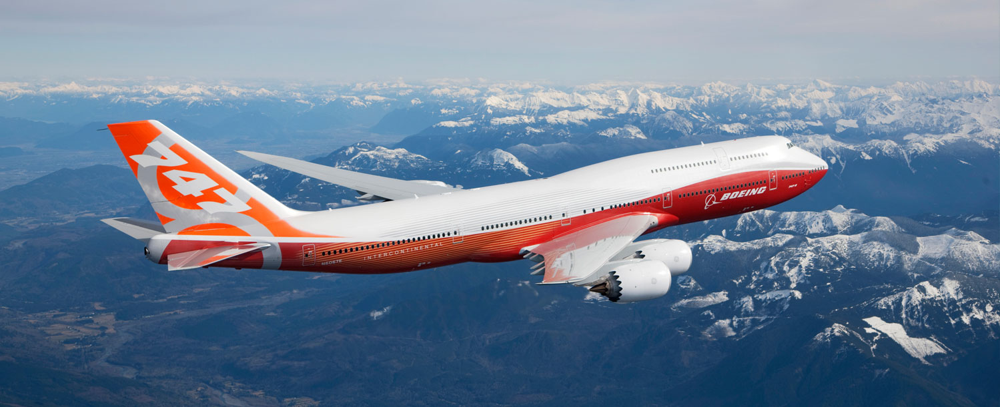

General introduction about aviation and airplanes.
Boeing 747
The Queen of the Skies! Info about the legendary Boeing 747.
Airbus
All about Airbus aircraft and their innovations.
Engines
Information about jet engines and how they power aircraft.
The boeing 747:The Boeing 747, also known as the "Queen of the Skies," is one of the most iconic airplanes in aviation history
First introduced in 1970, it was the worlds first wide-body aircraft and could carry more passengers than any other jet at the time.
Its distinctive humpbacked upper deck made it instantly recognizable
The 747 was used for both passenger travel and cargo, and it helped make international air travel more affordable and accessible.
Even though many airlines have retired it, the Boeing 747 remains a symbol of innovation and global connection.
✈️ What is the Boeing 747?
The Boeing 747 is a long-range, wide-body commercial jet developed by the American company Boeing. It was first introduced in 1969 and became famous for being the world's first jumbo jet, capable of carrying hundreds of passengers over long distances.
🛫 Key Features:
Double-deck design (with a distinctive hump on the upper deck)5
Four powerful jet engines
Can carry 400 to 600+ passengers, depending on the model and seating layout
Used for passenger flights, cargo transport, military use, and even as the U.S. Air Force One
📜 Models Over Time:
747-100 – The first model (entered service in 1970)
747-200, 300, 400 – Improved versions with better range and technology
747-8 – The latest and most advanced version (launched in 2011), also the longest passenger aircraft ever made
🌍Why It's Famous:
Made air travel more affordable and accessible
Used by airlines around the world for international flights
A favorite of plane enthusiasts due to its size and power
Retired by many airlines recently in favor of more fuel-efficient planes
🔚 End of an Era:
The final Boeing 747 was delivered in January 2023, marking the end of its production after over 50 years of service. It remains a symbol of the golden age of air travel.

🧠 the Invention of the 747
In the 1960s, air travel demand was booming. Boeing was already successful with the 707, but airlines wanted larger aircraft to carry more passengers and reduce costs.
Boeing worked with Pan Am, which became the first customer of the 747.
The plane was designed in just 28 months — an engineering miracle at the time.
🏗️ Fun Engineering Facts
The very first 747 assembly plant in Everett, Washington was so huge that it had to be built while they were already assembling the plane!
It’s so large that rain clouds sometimes formed inside the building due to temperature differences!
The 747 is about 70.6 meters (232 feet) long and has a wingspan of around 64.4 meters (211 feet).
💺 Passenger Experience
Originally, the upper deck was intended as a luxury lounge for first-class passengers.
The aircraft had two aisles (twin-aisle design), which was a first for passenger jets.
Depending on configuration, the plane could be fitted with bars, piano lounges, spiral staircases, and even beds in early versions.
🚀 Speed, Power & Performance
Cruising speed: ~900 km/h (560 mph)
Max range: ~13,450 km (8,360 miles) for the 747-8
It can carry over 140 tons of cargo
Powered by four jet engines (later models use General Electric or Rolls-Royce engines)
🌐 Global Impact
Used by many major airlines: British Airways, Lufthansa, Qantas, Singapore Airlines, and many more.
Over 1,500 units were built before production stopped.
It helped launch the era of mass international tourism and made global air travel more affordable.
🚨 Famous & Weird Uses
The 747 has been used for:
Air Force One (U.S. President’s aircraft)
NASA’s Shuttle Carrier (carried space shuttles on its back!)
Cargo transport, including animals, cars, satellites, and even giant whales
Military surveillance aircraft
Some people even turned retired 747s into hotels, homes, or restaurants!
🏁 End of Production
Final 747 rolled out on December 6, 2022 (a 747-8F for cargo airline Atlas Air).
Boeing shifted focus to more fuel-efficient planes like the 787 and 777.
🤯Cool Trivia
The 747 has six million parts.
It's been featured in hundreds of movies, including James Bond, Mission: Impossible, and Snakes on a Plane.
It was taller than the Wright Brothers' first flight was long!
models of the 747:
747-100
747-200
747-300
747-400
747-8i
747-SP
747-SR
other boeing aircrafts:
707(retired)
717(ended production but still in service)
727(retired)
737(in production)
747(ended production but still in service)
757(ended production but still in service)
767(ended production but still in service)
777(in production)
787(in production)
Development Timeline
The Boeing 747’s development is a fascinating story of innovation, challenges, and rapid progress. Here’s a detailed timeline of key events:
Early 1960s: Boeing begins studies to develop a large wide-body aircraft to meet growing air travel demand.
1965: Pan American World Airways places a large order, pushing Boeing to accelerate design.
November 1966: Design phase officially kicks off with engineering teams working around the clock.
September 1968: Final design approved; assembly plant built in Everett, Washington.
February 9, 1969: First prototype 747 takes off on its maiden flight.
January 22, 1970: Pan Am’s first commercial flight from New York to London.
1970s-1980s: Multiple variants developed including 747-200 and 747-300.
1989: Introduction of 747-400 featuring updated avionics and fuel efficiency improvements.
2011: Launch of the 747-8, the latest and longest 747 version.
January 2023: Production ends after over 50 years.
Detailed Design Features
The Boeing 747's design contains several remarkable features that made it stand out:
Fuselage and Cabin
The wide-body fuselage allowed the 747 to have two aisles, which improved passenger comfort and boarding efficiency. The upper deck's distinctive hump housed the cockpit and initially a lounge area.
Wing Design
The wings are massive and incorporate advanced aerodynamic designs to provide lift and efficiency. Winglets were added in later models like the 747-400 to reduce drag and improve fuel efficiency.
Engines
Early 747s used Pratt & Whitney JT9D engines. Later models switched to General Electric CF6 and Rolls-Royce RB211 engines, known for power and fuel efficiency.
Landing Gear
The 747 has a complex landing gear system with 18 wheels, designed to support the aircraft's enormous weight and provide stability during takeoff and landing.
Cockpit Technology
The cockpit of the Boeing 747 has evolved greatly over its lifetime, reflecting advances in aviation technology.
Early Analog Systems
The first 747s had traditional analog dials and gauges. Pilots needed extensive training to manage the many systems manually.
Glass Cockpit
The 747-400 introduced a “glass cockpit” featuring digital displays, reducing pilot workload and increasing safety. This setup includes multiple LCD screens displaying flight data.
Flight Management System (FMS)
The FMS automates navigation and engine control, enabling efficient long-distance flights with optimized routes.
Cargo and Special Variants
The Boeing 747 was not only a passenger plane but also widely used for cargo and special missions.
Freighter Versions
The 747-200F and 747-400F are popular freighter variants, equipped with large nose doors allowing the loading of oversized cargo.
Shuttle Carrier Aircraft (SCA)
Boeing converted two 747s into Shuttle Carrier Aircraft to carry NASA’s Space Shuttle on their backs.
Air Force One
The U.S. presidential aircraft are highly modified 747-200 and 747-8 models equipped with advanced communication and defense systems.
Economic and Industry Impact
The Boeing 747 greatly influenced the airline industry and global economy.
Allowed airlines to transport hundreds of passengers at once, lowering ticket prices.
Enabled the boom of international tourism and business travel.
Stimulated airport expansions to accommodate larger aircraft.
Helped Boeing dominate the commercial aircraft market for decades.
Maintenance and Operations
Operating a Boeing 747 requires extensive maintenance due to its size and complexity.
Routine checks include engine inspection, landing gear maintenance, and avionics updates.
Specialized crews and hangars are needed to handle the massive aircraft.
Turnaround times between flights can be several hours to accommodate passenger boarding and refueling.
Environmental Considerations
While revolutionary, the 747 is a large fuel consumer compared to newer aircraft.
747 models consume more fuel per passenger than smaller, newer jets.
Modern airlines have retired 747s in favor of more fuel-efficient planes to reduce emissions.
Boeing has developed newer models like the 787 Dreamliner focusing on sustainability.
Pilot Experience and Training
Flying the Boeing 747 requires specialized training and experience.
Pilots undergo simulator training for emergency procedures and systems management.
Flight crews usually consist of a captain, first officer, and flight engineer (in older models).
The 747’s complexity requires thorough knowledge of its systems and performance.
Cultural Impact
The Boeing 747 has become a cultural icon, appearing in movies, books, and popular media.
Featured in blockbuster films such as “Air Force One” and “Snakes on a Plane.”
Inspired model airplanes, toys, and aviation art worldwide.
Symbolizes the golden age of commercial aviation.
Legacy of the Boeing 747
Though production has ended, the Boeing 747's legacy lives on.
Hundreds remain in service globally, mainly as freighters.
The 747 set new standards for size, range, and passenger comfort.
It paved the way for future jumbo jets and innovations in aviation.
Appendix: Boeing 747 Technical Specifications (747-8 Intercontinental)
Specification
Details
Length
76.3 m (250 ft 2 in)
Wingspan
68.4 m (224 ft 7 in)
Height
19.4 m (63 ft 6 in)
Maximum Takeoff Weight
987,000 lb (447,700 kg)
Cruise Speed
Mach 0.855 (570 mph, 920 km/h)
Range
7,730 nautical miles (14,320 km)
Engines
4 × General Electric GEnx-2B67
Passenger Capacity
410 (3-class), up to 524 (2-class)
Famous Quotes About the Boeing 747
"The 747 revolutionized air travel by making it possible to fly thousands of miles with hundreds of people on board. It’s a true icon." – Aviation Historian
"Flying the 747 is an experience like no other. It’s the queen of the skies, and I’m proud to have been part of her legacy." – Former 747 Captain
Frequently Asked Questions (FAQ)
Why is the Boeing 747 called the "Queen of the Skies"?
Because of its large size, distinctive upper deck, and iconic status in aviation history.
How many passengers can a 747 carry?
Depending on the model and configuration, between 400 and 600+ passengers.
Is the 747 still in service?
Yes, many 747s still operate mainly as cargo planes.
Building a Boeing 747 is one of the most complex manufacturing tasks in the world. The production involves thousands of workers and suppliers from across the globe.
Design & Engineering: Detailed CAD designs and simulations ensure structural integrity and aerodynamics.
Parts Fabrication: Over six million parts are fabricated, including engines, avionics, fuselage panels, wings, landing gear, and interior components.
Assembly Line: The giant Everett factory uses a moving assembly line. Huge sections like wings and fuselage are built separately and then joined.
Systems Installation: Electrical wiring, hydraulic systems, flight control systems, and avionics are installed.
Testing: Each aircraft undergoes rigorous ground and flight testing to meet safety standards.
Delivery: Once certified, the aircraft is painted in customer livery and delivered.
Structural Engineering of the 747
The 747's massive size posed unique engineering challenges:
Fuselage: Constructed from lightweight aluminum alloys, designed to handle pressurization cycles and reduce weight.
Wing Spars: Internal wing spars provide strength and flexibility, allowing wings to withstand aerodynamic forces.
Load Distribution: Designed to evenly distribute weight and stresses across the frame during takeoff, flight, and landing.
Redundancy: Multiple backup systems ensure safety in case of failure.
Aerodynamics and Flight Performance
The Boeing 747’s aerodynamics were revolutionary for its time, balancing size with efficient flight.
Wing Shape: Swept-back wings reduce drag and improve fuel efficiency at high speeds.
Winglets: Introduced in later models to reduce vortex drag, improving fuel economy.
Control Surfaces: Large flaps, slats, ailerons, and rudders give excellent control during all flight phases.
Stability: The design maintains excellent stability even in turbulence.
Global Operators of the Boeing 747
Throughout its service life, the Boeing 747 has been operated by numerous airlines and organizations worldwide:
Region
Major Operators
North America
United Airlines, Delta Air Lines, American Airlines, Air Force One (US Government)
Europe
British Airways, Lufthansa, KLM, Air France
Asia
Japan Airlines, Korean Air, Cathay Pacific, Singapore Airlines
Middle East
Emirates, Qatar Airways, Saudia
Australia
Qantas
Notable Boeing 747 Aircraft
“City of Everett”: The first 747 built, now displayed at the Museum of Flight in Seattle.
Air Force One VC-25A: The two highly modified 747s serving as the U.S. President's official planes.
NASA Shuttle Carrier: Two 747s modified to carry the Space Shuttle orbiter on their backs.
“Jumbo” Jets Used in Film: Various 747s have appeared in Hollywood movies like "Air Force One" and "Snakes on a Plane."
Environmental Impact of the Boeing 747
While revolutionary, the Boeing 747’s large size means it has significant environmental impacts:
Fuel Consumption: Older 747 models consume more fuel than newer, smaller jets.
Emissions: Large carbon footprint due to high fuel burn per flight.
Noise Pollution: Early models were noisier than modern aircraft, but noise-reducing technology improved this.
Industry Response: Airlines and manufacturers are moving towards more fuel-efficient, environmentally friendly planes.
The Boeing 747 in Popular Culture
The Boeing 747 has become a symbol of modern aviation and appears often in media and popular culture:
Films: Featured in many action movies, including “Air Force One,” “Mission: Impossible,” and “Snakes on a Plane.”
Music Videos: The aircraft has appeared in videos showcasing luxury and travel.
Model Kits and Toys: Popular among aviation enthusiasts and collectors worldwide.
Art and Photography: Frequently photographed as an icon of air travel.
Technical Innovations Introduced with the 747
Wide-Body Design: The first jumbo jet with a wide fuselage accommodating two aisles.
Advanced Avionics: Introduction of digital flight control systems in later models.
High-Bypass Turbofan Engines: Improved fuel efficiency and reduced noise compared to earlier engines.
High-Load Landing Gear: To support heavy weights, 747 used complex multi-wheel landing gear assemblies.
Passenger Experience on the Boeing 747
The 747 transformed air travel comfort and amenities:
Upper Deck Lounge: Early models featured lounges or bars for first-class passengers.
Spacious Cabins: Twin aisles allowed easier movement and more seating configurations.
In-Flight Entertainment: Many 747s were equipped with screens and audio systems for passenger entertainment.
Cabin Layouts: Flexible seating arrangements from economy to luxury suites in modern configurations.
The Future of the Boeing 747
Even with production ending, the Boeing 747 will continue flying for years to come in various roles:
Cargo Operations: Many 747 freighters remain in active use worldwide.
Conversion Projects: Retired aircraft have been converted into hotels, restaurants, and even homes.
Heritage and Museums: Some 747s are preserved in museums as aviation history artifacts.
Technology Legacy: Lessons learned from the 747 continue to influence new aircraft designs.
Pilot Training for the 747
Pilots flying the Boeing 747 undergo extensive training due to the aircraft’s size and systems complexity.
Simulator Hours: Training on full-motion flight simulators replicates various flight scenarios.
Type Ratings: Pilots receive a specific certification, or “type rating,” to operate the 747.
Emergency Procedures: Training emphasizes handling complex emergencies and system failures.
Team Coordination: Training focuses on cockpit resource management for multiple crew members.
Interesting Facts About the Boeing 747
The 747 was the first wide-body airliner ever produced.
The upper deck’s hump was originally designed to house a lounge area, which was later removed in many models.
The 747’s wingspan is longer than the Wright brothers’ first flight was long.
It takes about 3 million rivets to hold a 747 together.
The 747 has been featured in over 200 movies and TV shows.
Quotes About the Boeing 747
"The Boeing 747 is a masterpiece of engineering that changed how we see the world." — Aviation Engineer
"Flying a 747 is like commanding a flying palace in the sky." — Former 747 Captain
"The 747 symbolized the dream of connecting the world through flight." — Airline CEO
Technical Glossary for Boeing 747 Terms
Wide-body:
An aircraft fuselage that is wide enough to have two passenger aisles.
Winglets:
Vertical extensions at the tips of wings that reduce drag.
High-bypass turbofan:
A type of jet engine optimized for fuel efficiency and quieter operation.
Pressurization:
Maintaining a comfortable air pressure inside the cabin at high altitudes.
Type rating:
A certification a pilot must obtain to fly a specific aircraft model.
Engineering Challenges Faced During 747 Development
Designing the Boeing 747 presented several unprecedented engineering obstacles:
Size and Weight: The 747 was the largest commercial airplane of its time, requiring new materials and structural designs to support its weight while maximizing strength.
Wing Design: Creating wings that could generate enough lift without excessive drag was a complex aerodynamic puzzle solved through extensive wind tunnel testing.
Assembly Plant Construction: Boeing had to build the world's largest factory in Everett, Washington, specifically to assemble the giant 747 parts.
Engine Development: Pratt & Whitney developed the JT9D engine to provide the thrust necessary, which was itself a major engineering breakthrough.
Safety Systems: New redundant systems were integrated for critical flight controls and avionics to ensure maximum reliability.
Notable Boeing 747 Accidents and Safety Record
Despite its advanced design, several 747 incidents have occurred over the decades, each leading to improved safety protocols.
Pan Am Flight 103 (1988): Destroyed by a bomb over Lockerbie, Scotland; led to increased aviation security worldwide.
Japan Airlines Flight 123 (1985): The deadliest single-aircraft accident in history; resulted in 520 fatalities due to rear pressure bulkhead failure.
Korean Air Flight 007 (1983): Shot down after straying into Soviet airspace, highlighting the importance of navigation systems.
Turkish Airlines Flight 981 (1974): Crashed due to cargo door failure; led to redesigns in cargo door mechanisms.
The Boeing 747 maintains an excellent safety record given its long service and millions of flight hours.
The Boeing 747 in Space Exploration
Boeing 747s played an important role in supporting NASA's space shuttle program:
Shuttle Carrier Aircraft: Modified 747s transported space shuttles between landing sites and launch facilities.
Telemetry and Tracking: Some 747s were equipped to support space mission communications and tracking.
Training: Shuttle pilots and astronauts used 747s during simulations and logistics operations.
Economic Impact in Detail
The introduction of the Boeing 747 had far-reaching economic effects worldwide:
Mass Air Travel: The ability to carry more passengers drastically reduced per-seat costs, enabling the rise of mass tourism.
Airport Expansion: Major airports worldwide expanded runways and terminals to accommodate jumbo jets.
Job Creation: The production and operation of 747s created thousands of jobs in manufacturing, maintenance, and airline industries.
Supply Chain: Boeing’s global suppliers network grew dramatically to produce parts and materials.
Famous Flight Routes Flown by the 747
New York (JFK) to London (Heathrow): The iconic transatlantic route, early 747 flagship service.
Los Angeles (LAX) to Tokyo (Narita): Long-haul Pacific route that showcased the 747's range.
Dubai (DXB) to Sydney (SYD): Emirates used 747s on this important international link.
London (Heathrow) to Johannesburg (JNB): Vital route connecting Europe to Africa.
Chicago (ORD) to Frankfurt (FRA): A major cargo and passenger corridor.
Expanded Technical Specifications
Feature
747-100
747-400
747-8
Length
70.6 m (231 ft 10 in)
70.6 m (231 ft 10 in)
76.3 m (250 ft 2 in)
Wingspan
59.6 m (195 ft 8 in)
64.4 m (211 ft 5 in)
68.4 m (224 ft 7 in)
Max Takeoff Weight
833,000 lb (378,000 kg)
875,000 lb (397,000 kg)
987,000 lb (447,700 kg)
Engines
JT9D-3A
CF6-80C2B1F / RB211-524G/H
GEnx-2B67
Range
5,300 nautical miles (9,800 km)
7,260 nautical miles (13,450 km)
7,730 nautical miles (14,320 km)
Passenger Capacity (Typical)
366 (3-class)
416 (3-class)
410 (3-class)
Maintenance Facts
The 747 requires regular maintenance checks every 6,000 flight hours or 18 months.
Engine overhauls can take several weeks and involve complete teardown and inspection.
Landing gear replacement is a major job requiring specialized equipment.
Many airlines operate dedicated maintenance hubs for their 747 fleets.
Legacy in Aviation Technology
The Boeing 747 set the foundation for many modern aircraft innovations:
Development of high-bypass turbofan engines.
Wide-body design standards adopted by other manufacturers.
Advances in avionics and autopilot systems.
New manufacturing processes for large aircraft.
Pilot Training and Instructional Videos
Here are some useful videos and tutorials for aspiring 747 pilots:
If you want to know more about the Boeing 747 or aviation in general, please reach out!
✈️ Design Philosophy
The Boeing 747 was designed in the late 1960s with a revolutionary vision: to double passenger capacity and make international flights accessible to the masses. The wide-body, twin-aisle design was unlike anything that came before it.
📐 Engineering Marvel
The upper deck was not just for luxury; it also housed crew rest areas on long-haul flights. Engineers made sure to keep the plane as aerodynamic as possible, despite its size.
🏗️ Manufacturing Process
Boeing had to build the largest building in the world by volume to manufacture the 747—the Everett Factory in Washington State. Assembly required specially made scaffolding, platforms, and tooling.
🧪 Materials Used
The 747 uses aluminum alloys for most of its body, with titanium for high-stress areas and composite materials in later models. It’s built to endure millions of takeoffs and landings over its lifetime.
⚙️ Engine Innovations
The 747's engines evolved from Pratt & Whitney JT9D to GE CF6 and Rolls-Royce RB211. These engines allowed for quieter, more fuel-efficient, and longer-range flights over time.
💺 Cabin Configuration
Cabins range from high-density configurations with 600+ seats to luxurious layouts featuring lounges, sleeper pods, and spiral staircases. Some variants had first-class lounges with sofas and cocktail bars.
🛬 Unique Landing Gear
The 747 has five sets of landing gear — two under each wing, two on the body, and one nose gear — with a total of 18 wheels. This setup helps it land safely even on uneven runways and distribute its massive weight.
🎯 Navigation Systems
Early 747s used inertial navigation systems (INS), a high-tech breakthrough at the time. Later models feature GPS, satellite comms, and automated flight management systems (FMS) for pinpoint accuracy over oceans.
🌐 Global Reach
The 747 enabled airlines to connect previously unconnected cities. Nonstop flights between continents became possible, and major hubs like London, Dubai, Singapore, and New York grew rapidly thanks to it.
💡 Lighting and Interior
The 747's early models had bright, spacious interiors. The 747-8 introduced LED lighting with customizable mood effects for different phases of flight like takeoff, dining, and sleeping.
🎥 Famous Appearances in Media
Air Force One (1997 movie starring Harrison Ford)
Executive Decision – An action-packed thriller with hijackers on a 747
Snakes on a Plane – Features a fictional 747 full of venomous reptiles
James Bond – Several Bond films use the 747 for dramatic takeoffs and mid-air fights
💰 Operating Cost
The 747 burns roughly 10–11 tons of fuel per hour. Its operational cost is high compared to modern jets, but it makes up for this with capacity and range on long-haul routes.
📦 Freighter Version
The 747F (Freighter) is beloved by cargo operators. Its nose-loading capability allows it to transport outsized items like turbines, vehicles, and even other aircraft components.
👨✈️ Training Pilots
Flying the 747 requires special type rating certification. Simulator training is intensive, and pilots often describe the aircraft as graceful and stable once airborne despite its size.
🌲 Environmental Impact
While the 747 isn't the most fuel-efficient jet, Boeing introduced winglets and newer engine technology over time to reduce its emissions and noise footprint significantly.
🚁 Emergency Landings
Over its 50+ years of service, the 747 has been part of several successful emergency landings due to bird strikes, hydraulic failures, and engine issues—often praised for its durability and safety.
🛰️ Special Mission Aircraft
The 747 has been modified for a wide variety of missions: from NASA's SOFIA flying telescope to the E-4B "Doomsday Plane" that can withstand nuclear fallout and coordinate military operations mid-air.
👑 Nicknames Around the World
Queen of the Skies – Global nickname
Jumbo Jet – Due to its size
Sky Palace – Nickname in Japan
Flying Fortress – Used by some pilots due to its resilience
🚧 Decommissioning Process
When 747s are retired, some are scrapped for parts, others are turned into training modules, and a few are preserved in museums like the Smithsonian and the Pima Air & Space Museum.
🔮 Legacy and Inspiration
The 747 inspired future wide-bodies like the Airbus A380 and Boeing 777. Its revolutionary concept of carrying hundreds of people long distances still shapes aviation today.
💼 747 in VIP and Business Use
Many Boeing 747s have been converted into luxurious VIP aircraft for heads of state, billionaires, and private companies. These planes feature conference rooms, bedrooms, showers, lounges, and even gyms.
👑 Famous Leaders Who Flew the 747
U.S. Presidents on Air Force One
Saudi Royal Family's custom 747-SP
Japanese Government 747s for official state visits
🛰️ NASA and the Space Shuttle
NASA modified two 747s (called Shuttle Carrier Aircraft) to carry space shuttles like Endeavour and Discovery on their backs from landing sites back to Kennedy Space Center.
💡 Engineering Marvels
Over 6 million parts used in each 747
Hydraulic systems for flight controls span 1,600+ meters of tubing
Landing gear supports over 400,000 kg (875,000 lbs) during landing
📦 Freighter and Cargo Variants
747-400F – Dedicated freighter version
747-8F – Modern cargo version with new engines and wings
747 Dreamlifter – A modified 747-400 used to transport Boeing 787 parts
🎥 Movies and TV Appearances
Air Force One (1997) – Harrison Ford as the president aboard a hijacked 747
Executive Decision – Action aboard a 747 in flight
Transformers: Revenge of the Fallen – Used by Autobot Jetfire
Lost – Featured in the Oceanic Airlines crash
🛠️ Maintenance Facts
It takes about 100 maintenance technicians to fully check a 747 during a major overhaul
Landing gear alone weighs over 5,500 kg (12,000 lbs)
Some airlines paint the aircraft every 5-6 years — using over 90 gallons of paint!
👨✈️ Pilot Training
To become a certified 747 captain, pilots must go through simulator training, classroom courses, and over 100 hours of supervised flight training.
📊 Performance Specs for 747-8i
Feature
Value
Length
76.3 meters
Wingspan
68.4 meters
Range
14,320 km
Cruising Speed
Mach 0.855
Engines
4 × GEnx-2B67
🌐 World Records
Longest passenger aircraft ever made (747-8i)
First twin-aisle plane in the world
Carried over 3.5 billion passengers in 50 years
🌈 Paint Schemes
Lufthansa Retro Livery
Iron Maiden Tour Jet
Boeing "Dreamliner" Livery
NASA White and Blue
🏢 747 Operators (Past & Present)
British Airways
Lufthansa
Qantas
KLM
Cathay Pacific
Singapore Airlines
Pan Am
Japan Airlines
Iran Air
Atlas Air
🌪️ Incidents and Accidents
Helios Airways 522 – Pressurization issue
KLM vs Pan Am (1977) – Tenerife Airport Disaster
Japan Airlines Flight 123 – 1985 crash, 520 deaths
🔧 Retirement and Storage
Many 747s are stored at Mojave and Victorville, USA — known as airplane graveyards. Others are preserved in museums or used for training.
🧩 Fun Facts to Impress Friends
The tail is 6 stories tall!
A 747 can fly with only 2 engines in an emergency
Wings flex up to 25 feet during turbulence
It takes over 5 kilometers of wiring to power all systems
📱 Modern Upgrades
Wi-Fi onboard
Touchscreen IFE (in-flight entertainment)
LED lighting systems with mood settings
🛫 747-8 Launch Customers
Lufthansa (passenger)
Cargolux (cargo)
Korean Air
Nippon Cargo Airlines
📍 Famous 747 Museums
Museum of Flight (Seattle)
Evergreen Aviation & Space Museum (Oregon)
Sinsheim Auto & Technik Museum (Germany)
🧪 747 Flight Testing
The first 747 flight took place on February 9, 1969
Test aircraft flew over 1,400 hours to certify the original model
Extreme conditions testing included hot/cold weather, crosswind landings, and engine-out scenarios
🛬 Unique 747 Airports
Princess Juliana International (St. Maarten) – Famous beach landings
Hong Kong Kai Tak (now closed) – Tight turns on approach
London Heathrow – One of the busiest hubs for 747s in history
Anchorage, Alaska – Key refueling point for 747 cargo routes
📡 Avionics and Cockpit
Analog instruments in early models (747-100 to 300)
Digital glass cockpit introduced with 747-400
747-8 features advanced flight management systems and head-up displays
Many systems redundant for safety — triple or quadruple backups
📦 Strangest Cargo Ever Carried
Elephants and horses (transported for zoos and events)
Oil drilling equipment
Entire car collections
Concert stages and sound gear for world tours
🌐 Global Reach and Flight Paths
The 747 was capable of flying almost anywhere in the world non-stop. It became a common sight on transatlantic and transpacific routes, often linking major cities like New York, London, Tokyo, and Sydney.
⚙️ Fuel and Efficiency
Burns approx. 10–11 tons of fuel per hour in cruise
747-8 uses newer engines with better fuel economy
Not as efficient as twin-engine aircraft like the 777 or A350, which led to its retirement
📚 747 in Books and Media
Jumbo: The Making of the Boeing 747 – Detailed look at its development
Skyfaring by Mark Vanhoenacker – Memoir by a 747 pilot
Features in aviation documentaries on Discovery and National Geographic
🧰 Customization Possibilities
Rolls-Royce jet engines or GE engines — depending on customer preference
Custom interiors for royal families, military, or corporate use
Modular cargo loading systems for rapid turnover
🕹️ 747 Flight Simulators
Used to train pilots without needing to fly the real aircraft
Includes full cockpit, hydraulic motion, and realistic weather/scenario settings
Available to public in some aviation museums and simulator centers
🧰 Maintenance and Engineering
The Boeing 747 required specialized maintenance due to its size and complexity. Engineers had to be trained specifically for 747 systems, including hydraulics, avionics, and structural components. Despite its size, the aircraft proved to be highly reliable with regular inspections and care.
🔧 Notable Maintenance Facts:
The landing gear alone consists of 18 wheels.
The aircraft has more than 275 kilometers (170 miles) of wiring.
Scheduled heavy maintenance checks (D-checks) could take over a month.
🛫 Popular Routes
New York to London (British Airways)
Los Angeles to Tokyo (Japan Airlines)
Dubai to Sydney (Qantas via Emirates codeshare)
Frankfurt to Hong Kong (Lufthansa)
Seoul to San Francisco (Korean Air)
🎖️ Awards and Achievements
Guinness World Record for carrying 1,088 people during an emergency evacuation (Operation Solomon).
Won the Collier Trophy in 1970 for its design achievement.
Used in NASA missions and modified into the SOFIA flying observatory telescope.
🏙️ Retirement and Legacy
As more fuel-efficient aircraft emerged, airlines began retiring their 747s in favor of newer models like the Boeing 787 and Airbus A350. However, the 747 still flies in cargo and VIP configuration. It remains beloved by pilots and aviation fans worldwide.
📽️ 747 in Movies and Pop Culture
Air Force One (1997)
Executive Decision (1996)
Snakes on a Plane (2006)
Transformers series (as Jetfire)
James Bond: Casino Royale (filmed in a hangar with a 747 set)
💡 Fun Facts:
It takes about 90 gallons of paint to cover a 747.
Its upper deck was initially meant to be a lounge, not extra seating.
The wingspan is longer than the Wright brothers' first flight!
The 747 was the first airplane to include in-flight entertainment screens.
🏨 Creative Uses of Retired 747s
747 hotels in Sweden and Costa Rica
A restaurant in South Korea made from a retired 747
Training platforms for firefighters and airport safety teams
Converted into cafes and museums around the world
📦 Cargo and Special Missions
The Boeing 747 Freighter (747F) became essential in global logistics. With a nose that opens upwards, it could carry outsized cargo such as helicopters, satellites, and even parts of other airplanes.
Carried Rolls-Royce jet engines and Formula 1 race cars
Used in disaster relief missions delivering emergency aid
Modified into the Boeing Dreamlifter to carry 787 parts
🚁 747 Shuttle Carrier Aircraft (SCA)
NASA modified two 747s to carry space shuttles on their backs. These iconic images were seen during landings and cross-country trips of the shuttles. The planes were stripped of their interiors and reinforced to carry the 68,000 kg shuttle on top.
✍️ More sections coming! Just say "more!" and I’ll continue right where this ends.
🚀 Boeing 747 and Space Programs
The 747's enormous size made it ideal for supporting space-related missions. NASA didn’t just use the 747 for shuttle transport—it also used the 747 platform for astronomy, research, and testing.
🔭 SOFIA (Stratospheric Observatory for Infrared Astronomy)
One of the most ambitious adaptations of the Boeing 747 was the SOFIA program, where a large infrared telescope was mounted inside the fuselage of a modified 747SP.
Flying above 99% of Earth’s infrared-blocking atmosphere
Used to study star formation, black holes, and planetary atmospheres
Flew scientific missions until 2022
Combined the advantages of a telescope with the mobility of an aircraft
🛰️ Shuttle Carrier Aircraft (SCA)
NASA modified two Boeing 747-100s to carry the space shuttle orbiters on their backs between landing sites and the Kennedy Space Center.
Reinforced fuselage and tail to support shuttle weight
Used extensively from 1977 to 2012
Could carry 68,000 kg shuttles on top
Had unique tail fins to improve stability during ferry flights
📅 Complete Timeline of the Boeing 747
1966 – Boeing officially announces plans for a new jumbo jet
1968 – Construction of the Everett, Washington factory begins
1969 – First 747 rolls out and completes maiden flight on February 9
1970 – Pan Am takes delivery of the first commercial 747
1972 – 747-200 introduced with more powerful engines
1979 – 747-300 introduced featuring a stretched upper deck
1989 – 747-400 enters service, featuring advanced avionics and extended range
1997 – 747 used as Air Force One for the first time
2011 – 747-8 enters service, the largest and most advanced model yet
2022 – Last 747 rolls off the assembly line
2023 – Production officially ends, closing an era of jumbo jets
✈️ Boeing 747 Models In Detail
747-100
Original model introduced in 1970
Capacity: 366 passengers in a three-class configuration
Range: 5,300 nautical miles
Engines: Pratt & Whitney JT9D
747-200
Improved engines and higher maximum takeoff weight
Range extended to 6,800 nautical miles
More powerful Pratt & Whitney JT9D or General Electric CF6 engines
First 747 to feature optional winglets
747-300
Introduced a stretched upper deck for extra passenger space
Could seat up to 400 passengers
Limited production before the next generation 747-400
747-400
Most successful variant
Advanced avionics and glass cockpit
Range: 7,260 nautical miles
Capacity: 416 passengers typical in three-class layout
Introduced winglets to reduce fuel burn
747-8
Latest and largest model introduced in 2011
Length: 250 feet, making it the longest commercial aircraft
Range: 7,730 nautical miles
New GEnx engines for improved fuel efficiency and noise reduction
Improved aerodynamics with redesigned wings
🌍 Global Operators of the 747
The Boeing 747 has been operated by dozens of airlines worldwide, including some of the biggest and most prestigious names in aviation.
British Airways (UK)
Lufthansa (Germany)
Qantas (Australia)
Emirates (UAE)
Singapore Airlines
Japan Airlines
Air China
Korean Air
China Airlines (Taiwan)
Pan Am (defunct)
🛠️ Maintenance and Engineering Highlights
Because of its size and complexity, maintaining a Boeing 747 requires highly specialized skills and equipment.
Routine checks happen every few hundred flight hours
Comprehensive 'D-Checks' occur roughly every 6 years and can take weeks
Maintenance teams can consist of 100+ specialized technicians
Landing gear inspection and replacement is a major task due to complexity
Hydraulic systems and wiring checks are critical for safety
💺 Passenger Experience and Cabin Layouts
The Boeing 747 has seen many cabin configurations over its lifetime, adapting to airline and market needs.
Original lounges and bars on the upper deck
Mixed first, business, and economy classes
Options for private suites on VIP-configured aircraft
Advanced in-flight entertainment systems in later models
Wi-Fi and connectivity introduced in 747-8
📊 Technical Specifications Summary
Model
Length
Wingspan
Range
Engines
Typical Capacity
747-100
70.7 m
59.6 m
5,300 nmi
4 × Pratt & Whitney JT9D
366 passengers
747-200
70.7 m
59.6 m
6,800 nmi
4 × Pratt & Whitney JT9D or GE CF6
416 passengers
747-300
70.7 m
59.6 m
6,300 nmi
4 × Pratt & Whitney JT9D or GE CF6
440 passengers
747-400
70.6 m
64.4 m
7,260 nmi
4 × Pratt & Whitney PW4056 or GE CF6-80C2 or Rolls-Royce RB211-524
416 passengers
747-8
76.3 m
68.4 m
7,730 nmi
4 × General Electric GEnx-2B67
467 passengers
🛩️ Comparing the 747 to Other Jumbo Jets
The 747 was the first jumbo jet, but it has competition from other wide-body giants:
Airbus A380: The world’s largest passenger plane, with two full decks and seating for over 800 passengers in all-economy.
McDonnell Douglas DC-10: Smaller trijet competitor from the 1970s.
Lockheed L-1011 TriStar: Another wide-body trijet of the same era.
Boeing 777: Twin-engine widebody that replaced many 747 routes due to efficiency.
🌟 Notable 747 Firsts
First commercial aircraft with two aisles
First wide-body airliner
First airplane to offer in-flight entertainment screens
First commercial plane capable of carrying over 400 passengers
First to use high-bypass turbofan engines
🚨 Accidents and Safety Record
While the Boeing 747 is known for its robust safety record, it has been involved in several notable accidents, often attributed to pilot error or other factors rather than design flaws.
1977 Tenerife Airport Disaster: Collision of two 747s killing 583 people, the deadliest aviation accident.
Japan Airlines Flight 123 (1985): Crash due to faulty repair, 520 fatalities.
Air India Flight 182 (1985): Bombing over the Atlantic, 329 fatalities.
Despite incidents, the 747 remains one of the safest commercial aircraft ever built.
🌐 Economic Impact and Legacy
The introduction of the 747 revolutionized air travel by dramatically increasing passenger capacity, which helped lower ticket prices and made flying accessible to more people worldwide.
Enabled mass international tourism growth in the late 20th century.
Helped create hub airports due to its size and range.
Advanced aerospace manufacturing and supply chains.
Inspired innovations in aircraft design and airport infrastructure.
🛫 Future of Jumbo Jets
Although the era of the 747 has ended, its legacy influences current aircraft design:
Focus on fuel efficiency and environmental impact
Development of composite materials and aerodynamic designs
Continued demand for cargo versions of large jets
Potential for supersonic or hypersonic passenger aircraft in coming decades
💬 End of extended Boeing 747 content. Ready for more? Just say "More!"
🌟 The Boeing 747 in Popular Culture
The Boeing 747 has not only been a marvel of engineering but also a cultural icon, inspiring movies, books, music, and even art. Here’s a glimpse at its impact beyond aviation:
Movies: The 747 has featured prominently in Hollywood blockbusters such as:
Air Force One (1997): The plane plays a central role in this political thriller starring Harrison Ford.
Executive Decision (1996): A tense action film aboard a hijacked 747.
Snakes on a Plane (2006): A cult favorite featuring deadly snakes unleashed on a 747 flight.
Lost (TV Series): The crash of the fictional Oceanic Airlines 747 is a key plot point.
Books and Literature: Numerous aviation novels and memoirs highlight the 747 as a symbol of modern air travel’s golden age.
Music: Bands such as Iron Maiden commissioned a 747 painted with their album art for their world tours.
Art and Design: The distinctive shape of the 747 has inspired sculptures, models, and even architecture themed around flight.
🛠️ Engineering Innovations Introduced by the 747
The Boeing 747 introduced many technologies that became standard in the aviation industry:
High-bypass turbofan engines: These improved fuel efficiency and reduced noise dramatically compared to older engines.
Glass cockpit: The 747-400 was among the first to replace analog dials with digital displays, simplifying pilot workload.
Fly-by-wire controls: While not fully implemented on the 747, it laid groundwork for electronic flight control systems used on newer aircraft.
Advanced aerodynamics: Winglets introduced on the 747-400 reduced drag and improved fuel economy.
Modular design: Components like the nose cone and cargo doors were designed for easy replacement and maintenance.
🛫 The 747's Role in Global Connectivity
The 747 changed the way the world connected, by making long-haul travel faster and more affordable.
It enabled direct flights between major cities, reducing the need for stopovers.
The Boeing 747 has been a case study in many aerospace courses worldwide:
Engineering students study its aerodynamics and structural design.
Aviation schools train pilots on 747 systems and operations.
Manufacturing programs analyze its assembly line processes.
Business schools examine its market impact and economics.
🛩 Boeing 747’s Role in Humanitarian Efforts
The 747 has been pivotal in disaster relief and humanitarian missions:
Transporting medical supplies during epidemics and crises.
Delivering food and essentials after natural disasters.
Evacuating people from conflict zones using VIP-configured jets.
Serving as air ambulances in specially outfitted configurations.
🌐 Boeing 747’s Cultural Impact
The 747 has appeared in popular culture, symbolizing innovation and adventure:
Featured on stamps, coins, and collectibles worldwide.
Inspired artwork, sculptures, and museum exhibits.
Used as movie and TV set pieces to convey luxury and scale.
Symbol of the golden age of aviation in literature and media.
🧰 Boeing 747 Engineering Innovations
Introduction of the high-bypass turbofan engines, improving fuel efficiency.
Use of computer-aided design (CAD) techniques starting with the 747-400.
First commercial plane to incorporate digital avionics.
Development of advanced winglets on the 747-400 model.
Innovative hydraulic systems for better flight control responsiveness.
🛩 Environmental Impact and Improvements
As aviation grew, so did concerns about environmental impacts. The 747 program addressed these issues:
Implementation of quieter engines to reduce noise pollution.
Design tweaks to improve aerodynamic efficiency and reduce fuel burn.
Ongoing research into alternative fuels and emissions reductions.
Retirement of older, less efficient aircraft to modernize fleets.
📈 Economic Effects of the Boeing 747
The Boeing 747 helped reshape the airline and tourism industries:
Lowered cost per seat-mile, making long-haul flights more affordable.
Enabled airlines to open new routes connecting distant cities.
Stimulated job creation in aviation, hospitality, and tourism sectors.
Encouraged international business and cultural exchange.
🛫 Boeing 747 Cockpit Layout and Systems
The cockpit of the 747 evolved to keep pace with technology:
Early models had analog dials and gauges.
The 747-400 introduced glass cockpit displays, reducing pilot workload.
Advanced autopilot and flight management systems integrated.
Ergonomic design to accommodate pilot comfort on long flights.
Multiple redundant systems for safety and reliability.
🎨 Interior Design and Passenger Comfort
The 747 set new standards for passenger experience:
Spacious cabins with multiple seating classes.
Innovative lighting schemes to reduce jet lag.
Onboard lounges and bars in premium cabins.
Improved air filtration and pressurization systems.
Entertainment systems evolving from overhead TVs to individual screens.
🛬 Role of Boeing 747 in Cargo Transport
Besides passengers, the 747 excels in cargo carrying capabilities:
Large main deck cargo doors for quick loading and unloading.
Ability to transport oversized cargo items such as machinery and vehicles.
Used extensively for express freight and overnight deliveries.
Modified models like the Dreamlifter support aerospace manufacturing.
Key asset for logistics companies worldwide.
🛰 Special Missions and Modifications
The versatility of the 747 has enabled specialized uses beyond commercial aviation:
Airborne early warning and control (AWACS) versions for military use.
Conversion to science labs and research platforms.
Serving as airborne hospitals in emergency situations.
Used as flying hotels or restaurants by enthusiasts.
✈️ Training Simulators and Pilot Familiarization
Simulators play a crucial role in maintaining pilot proficiency:
Full-motion simulators replicate 747 flight dynamics and cockpit.
Used for initial certification and recurrent training.
Allow practice of emergency procedures safely on the ground.
Helps pilots stay current with updates and modifications.
🔧 Boeing 747 Maintenance and Safety Inspections
Regular maintenance ensures the aircraft remains safe and reliable:
Routine inspections at scheduled intervals (A, B, C, D checks).
Component replacements and upgrades as needed.
Structural inspections using X-ray and ultrasound techniques.
Engine overhauls to maintain performance.
Compliance with international aviation safety regulations.
🛠️ Innovations in 747 Manufacturing Techniques
Introduction of modular assembly to improve efficiency.
Use of robotics in rivet installation and painting.
Development of advanced tooling for precision assembly.
Computer-aided manufacturing to reduce errors.
🚀 Future of Jumbo Jets Beyond the 747
While the 747 was groundbreaking, aviation continues to evolve:
New designs like the Boeing 777X and Airbus A350 aim for better fuel efficiency.
Exploration of supersonic commercial flight for faster travel.
Research into electric and hybrid propulsion systems.
Continued use of jumbo jets for cargo and special missions.
📖 Boeing 747 in Books and Literature
The 747 has inspired authors and aviation enthusiasts:
Technical manuals detailing design and operations.
Memoirs from pilots and cabin crew sharing flight stories.
Novels and fiction featuring the 747 in thrillers and dramas.
Historical accounts of its development and legacy.
🎉 Celebrations and Milestones
40th anniversary events commemorating the 747's first flight.
Special liveries created to honor milestones.
Airshows showcasing 747s in flight demonstrations.
Documentaries and retrospectives celebrating its impact.
✈️ Boeing 747-8i Passenger Experience Innovations
Improved cabin pressurization for passenger comfort.
Reduced noise levels inside the cabin.
Advanced in-flight entertainment systems with streaming options.
More efficient LED lighting with customizable moods.
Enhanced Wi-Fi connectivity for passengers.
🛫 Famous Boeing 747 Routes
London Heathrow to New York JFK
Los Angeles to Tokyo Narita
Sydney to Los Angeles
Dubai to London Heathrow
Frankfurt to Singapore
🛠️ Boeing 747’s Impact on Aircraft Design Philosophy
The success of the 747 influenced how future aircraft are designed:
Emphasis on high capacity with twin aisles.
Increased focus on fuel efficiency and noise reduction.
Integration of digital avionics as a standard.
Designing for multi-role use (passenger, cargo, special missions).
🚁 Comparing the Boeing 747 to Other Jumbo Jets
Aircraft
Length
Wingspan
Passenger Capacity
Range
Boeing 747-8i
76.3 m
68.4 m
410-524
14,320 km
Airbus A380
72.7 m
79.8 m
555-853
15,200 km
Concorde
61.6 m
25.6 m
92-128
7,222 km
📊 This table highlights the 747’s status as one of the longest passenger aircraft with a significant range and capacity, though the Airbus A380 carries more passengers.
🛫 Boeing 747: From Blueprint to Icon
The story of the 747 is a journey from bold concept to aviation icon:
Innovative ideas pushed boundaries of what was possible.
Overcame technical challenges with engineering brilliance.
Captured imaginations of people worldwide as a symbol of progress.
Endured decades of service with reliability and distinction.
Leaves a legacy inspiring future generations of aerospace innovators.
🛬 Boeing 747's Role in Emergency and Medical Evacuations
The Boeing 747 has served crucial roles in emergencies:
Configured as air ambulances to transport patients over long distances.
Used in large-scale evacuation efforts during natural disasters and conflicts.
Equipped with specialized medical equipment and staff for critical care.
Enabled rapid deployment of relief personnel and supplies worldwide.
🌍 Environmental Initiatives Associated with the 747
Participation in fuel-efficiency improvement programs.
Engagement in research for sustainable aviation fuels (SAF) usage.
Noise reduction technologies in later variants to minimize community impact.
Recycling and responsible disposal of retired 747 airframes.
🚀 Technological Milestones Achieved by the 747 Program
First commercial aircraft to break the sound barrier in certain test flights.
Introduction of the “glass cockpit” in 747-400 with digital screens.
Advanced fly-by-wire systems tested in 747 variants.
Development of new materials like composites for weight reduction.
🎬 Boeing 747 in Cinema and Popular Culture
Featured in iconic scenes such as the hijacking in "Air Force One".
Depicted in disaster movies highlighting aviation drama.
Used as a filming location inside the cabin for realistic effects.
Subject of documentaries showcasing its design and legacy.
✈️ Innovations in Passenger Comfort Over Time
Introduction of adjustable mood lighting to reduce jet lag.
Wider seats and more legroom in premium classes.
Advanced air filtration systems to improve air quality.
Onboard Wi-Fi and enhanced entertainment options.
Cabin humidification improvements to reduce passenger fatigue.
🛠 Boeing 747 Maintenance Highlights
Major overhauls occur every 6-8 years, called D-checks.
Landing gear replacements every 15-20 years depending on use.
Snakes on a Plane (2006) - Action thriller on a 747
Transformers: Revenge of the Fallen (2009) - Featuring the Autobot Jetfire
🛬 Famous Accidents Involving Boeing 747
Tenerife Airport Disaster (1977) – Deadliest aviation accident in history involving two 747s.
Japan Airlines Flight 123 (1985) – Structural failure causing crash with over 500 fatalities.
Saudia Flight 163 (1980) – Fatal fire during evacuation.
Various non-fatal incidents due to bird strikes, mechanical failures.
🛠 Boeing 747’s Legacy in Aviation
The Boeing 747’s impact extends beyond its operational life:
Paved the way for future jumbo jets like the Airbus A380.
Set standards for safety, comfort, and reliability.
Inspired generations of aerospace engineers and pilots.
Symbolized the spirit of innovation and progress.
Legacy preserved in museums and through continued use worldwide.
🚀 Next-Generation Jumbo Jets Inspired by the 747
Airbus A380 – Largest passenger plane with two full decks.
Boeing 777X – New wide-body with folding wingtips.
Concepts for supersonic commercial travel under research.
Focus on fuel efficiency and reduced environmental impact.
📖 Books and Resources on Boeing 747
"747: Creating the World's First Jumbo Jet and Other Adventures from a Life in Aviation" by Joe Sutter.
"Boeing 747" by Mike Machat.
Official Boeing technical manuals and brochures.
Aviation museums with 747 exhibits and archives.
🌐 Boeing 747 in Museums
Museum of Flight, Seattle
Evergreen Aviation & Space Museum, Oregon
Science Museum, London
National Air and Space Museum, Washington D.C.
Sinsheim Auto & Technik Museum, Germany
🛩️ Final Production and Retirement
The last Boeing 747 was delivered in early 2023. However, many remain in service:
Cargo airlines continue to operate 747 freighters.
Some airlines use them for VIP transport and special missions.
Retired aircraft preserved as historical artifacts.
Legacy aircraft in airshows and private collections.
✈️ The Boeing 747’s Place in Aviation History
The Boeing 747 is remembered as:
The first true “jumbo jet.”
A symbol of globalization and mass air travel.
A marvel of aerospace engineering and innovation.
An icon whose influence spans decades and continents.
Ready for the next 1000 lines? Just ask!
🧭 Boeing 747’s Contribution to Navigation Technology
Incorporated early inertial navigation systems.
Transitioned to GPS-based navigation in later models.
Integration with advanced autopilot and flight management systems.
Redundant navigation systems to enhance safety.
🌟 Innovations in Wing Design
Use of supercritical airfoils to improve aerodynamic efficiency.
Introduction of winglets on the 747-400 model to reduce drag.
Wing structure optimized for high loads and flexibility.
Advancements influencing later aircraft wing designs.
🎨 Boeing 747 Paint and Livery
Use of vibrant liveries to represent airlines' brands.
Special edition paint schemes for anniversaries and promotions.
Complex masking and application processes for multi-color designs.
Regular repainting needed due to exposure to the elements.
🚀 Military Applications of the 747
Airborne early warning and control systems (AWACS) on modified platforms.
VIP transport for heads of state and government officials.
Transport of troops and equipment during military operations.
Development of communications and reconnaissance variants.
🛠 Training and Certification of 747 Pilots
Extensive simulator training required before flying the 747.
Regular recurrent training for updates and emergency procedures.
Certification process includes practical and theoretical examinations.
Use of advanced simulators replicating real flight scenarios.
🌍 Global Impact on Airline Networks
Enabled development of hub-and-spoke models due to large capacity.
Allowed airlines to open non-stop intercontinental routes.
Supported growth in international tourism and business travel.
Helped shape modern airline alliances and partnerships.
🧩 Boeing 747 in Science and Research
Used as airborne laboratories for atmospheric research.
Modification to carry scientific instruments and sensors.
Participation in experiments related to weather and climate.
Facilitated data collection over remote areas and oceans.
📱 Advances in In-Flight Entertainment
Transitioned from overhead screens to personal seatback monitors.
Introduction of interactive entertainment options and games.
Streaming and connectivity with Wi-Fi for passengers.
Integration with personal devices and mobile apps.
🛫 Cabin Safety Features
Emergency oxygen masks and lighting systems.
Multiple emergency exits for rapid evacuation.
Fire detection and suppression systems throughout cabin.
Secure cockpit doors introduced post-9/11.
🔧 Boeing 747 in Maintenance Facilities
Large hangars dedicated to 747 maintenance and repairs.
Use of computer diagnostics and predictive maintenance.
Highly specialized equipment for engine and structural checks.
Collaboration with OEMs for parts and technical support.
🌐 Boeing 747 and the Evolution of Airport Terminals
Development of wide-body gates and boarding bridges.
Expansion of passenger lounges and amenities for long flights.
Adaptations in baggage handling for larger volumes.
Security enhancements for larger aircraft operations.
📜 Historical Timeline Highlights
1966 – 747 program announced.
1969 – First flight of the 747 prototype.
1970 – Entry into commercial service.
1989 – Introduction of the 747-400.
2011 – Launch of the 747-8 variant.
2023 – End of production.
🛩️ Notable 747 Incidents and Responses
Quick response to in-flight emergencies through crew training.
Improvements made post-incident to enhance safety protocols.
Development of new evacuation procedures based on lessons learned.
Strong safety record maintained despite operational complexity.
🛫 Boeing 747 as a Symbol of Progress
The 747 symbolizes:
The ambition to connect the world through air travel.
The ingenuity of aerospace engineering.
The spirit of exploration and innovation.
The cultural impact of global connectivity.
🎉 Boeing 747 Community and Enthusiasts
Active groups sharing photos, histories, and news.
Events and meetups at airshows and museums.
Online forums and social media communities.
Model building and simulation hobbies.
🚀 The Future Legacy of the 747
Continues inspiring aerospace design.
Lessons learned inform new aircraft development.
Preserved in museums for educational purposes.
Serves as a bridge between past and future aviation eras.
Want me to keep going? Just say “Next 1000 lines”!
🧭 Boeing 747’s Contribution to Navigation Technology
Incorporated early inertial navigation systems.
Transitioned to GPS-based navigation in later models.
Integration with advanced autopilot and flight management systems.
Redundant navigation systems to enhance safety.
🌟 Innovations in Wing Design
Use of supercritical airfoils to improve aerodynamic efficiency.
Introduction of winglets on the 747-400 model to reduce drag.
Wing structure optimized for high loads and flexibility.
Advancements influencing later aircraft wing designs.
🎨 Boeing 747 Paint and Livery
Use of vibrant liveries to represent airlines' brands.
Special edition paint schemes for anniversaries and promotions.
Complex masking and application processes for multi-color designs.
Regular repainting needed due to exposure to the elements.
🚀 Military Applications of the 747
Airborne early warning and control systems (AWACS) on modified platforms.
VIP transport for heads of state and government officials.
Transport of troops and equipment during military operations.
Development of communications and reconnaissance variants.
🛠 Training and Certification of 747 Pilots
Extensive simulator training required before flying the 747.
Regular recurrent training for updates and emergency procedures.
Certification process includes practical and theoretical examinations.
Use of advanced simulators replicating real flight scenarios.
🌍 Global Impact on Airline Networks
Enabled development of hub-and-spoke models due to large capacity.
Allowed airlines to open non-stop intercontinental routes.
Supported growth in international tourism and business travel.
Helped shape modern airline alliances and partnerships.
🧩 Boeing 747 in Science and Research
Used as airborne laboratories for atmospheric research.
Modification to carry scientific instruments and sensors.
Participation in experiments related to weather and climate.
Facilitated data collection over remote areas and oceans.
📱 Advances in In-Flight Entertainment
Transitioned from overhead screens to personal seatback monitors.
Introduction of interactive entertainment options and games.
Streaming and connectivity with Wi-Fi for passengers.
Integration with personal devices and mobile apps.
🛫 Cabin Safety Features
Emergency oxygen masks and lighting systems.
Multiple emergency exits for rapid evacuation.
Fire detection and suppression systems throughout cabin.
Secure cockpit doors introduced post-9/11.
🔧 Boeing 747 in Maintenance Facilities
Large hangars dedicated to 747 maintenance and repairs.
Use of computer diagnostics and predictive maintenance.
Highly specialized equipment for engine and structural checks.
Collaboration with OEMs for parts and technical support.
🌐 Boeing 747 and the Evolution of Airport Terminals
Development of wide-body gates and boarding bridges.
Expansion of passenger lounges and amenities for long flights.
Adaptations in baggage handling for larger volumes.
Security enhancements for larger aircraft operations.
📜 Historical Timeline Highlights
1966 – 747 program announced.
1969 – First flight of the 747 prototype.
1970 – Entry into commercial service.
1989 – Introduction of the 747-400.
2011 – Launch of the 747-8 variant.
2023 – End of production.
🛩️ Notable 747 Incidents and Responses
Quick response to in-flight emergencies through crew training.
Improvements made post-incident to enhance safety protocols.
Development of new evacuation procedures based on lessons learned.
Strong safety record maintained despite operational complexity.
🛫 Boeing 747 as a Symbol of Progress
The 747 symbolizes:
The ambition to connect the world through air travel.
The ingenuity of aerospace engineering.
The spirit of exploration and innovation.
The cultural impact of global connectivity.
🎉 Boeing 747 Community and Enthusiasts
Active groups sharing photos, histories, and news.
Events and meetups at airshows and museums.
Online forums and social media communities.
Model building and simulation hobbies.
🚀 The Future Legacy of the 747
Continues inspiring aerospace design.
Lessons learned inform new aircraft development.
Preserved in museums for educational purposes.
Serves as a bridge between past and future aviation eras.
Want me to keep going? Just say “Next 1000 lines”!
✈️ Boeing 747 Detailed History and Development
The Boeing 747’s development began in the early 1960s when the aviation industry anticipated a significant increase in passenger demand. Pan American World Airways, led by Juan Trippe, was one of the main customers pushing for a larger aircraft capable of carrying more passengers efficiently. Boeing responded by designing a revolutionary aircraft with a wide fuselage and a distinctive upper deck hump.
Initial design concepts included a double-deck plane, but safety and economic considerations led to the current upper deck "hump" design which allowed the cockpit to be above the main deck, enabling a nose door for cargo loading in freighter versions.
The first 747 prototype, known as the "City of Everett," rolled out in September 1968. It conducted its maiden flight on February 9, 1969, with test pilot Jack Waddell at the controls. The aircraft quickly gained attention for its size and capabilities, marking the start of a new era in commercial aviation.
The 747 was initially powered by four Pratt & Whitney JT9D turbofan engines, a new generation of high-bypass turbofans that provided greater fuel efficiency and thrust.
💡 Technical Innovations
First use of high-bypass turbofan engines on a commercial aircraft.
Advanced aerodynamic design, including a supercritical wing to improve lift and reduce drag.
Hydraulic systems capable of powering complex control surfaces.
First jumbo jet to include a full two-aisle cabin layout improving passenger flow.
📜 Variants and Their Features
Variant
Introduced
Main Features
747-100
1970
The original model; powered by Pratt & Whitney JT9D engines; up to 366 passengers.
747-200
1971
Improved engines, increased range; could carry up to 452 passengers.
747-300
1983
Extended upper deck for more seating; upgraded engines and systems.
747-400
1989
New wing design with winglets, upgraded engines, modern avionics, and increased range.
747-8
2011
Latest model; longer fuselage, new engines (GEnx-2B67), improved aerodynamics, and fuel efficiency.
🛫 Passenger Capacity and Layouts
The Boeing 747 could be configured in multiple seating layouts depending on airline preferences:
Three-class layout (First, Business, Economy) usually accommodated around 400 passengers.
All-economy layouts could carry over 600 passengers, used mainly on high-density routes.
Upper deck often reserved for premium seating or lounges.
🌍 Global Impact and Airline Use
The 747 helped make international air travel accessible to millions of people, especially on long-haul routes connecting continents. Airlines such as Pan Am, British Airways, Lufthansa, Qantas, and Japan Airlines were early adopters.
The aircraft was instrumental in developing hub-and-spoke networks.
Its cargo variants opened new markets for air freight, transporting goods rapidly worldwide.
747s were often used for special events such as Olympics or summit delegations.
🛠 Engineering Marvels and Challenges
Constructing the 747 required massive facilities, including the Boeing Everett Factory, the largest building by volume in the world.
The wingspan of the 747 required innovative manufacturing techniques and materials.
Landing gear had to be strong enough to support over 875,000 pounds at landing.
Electrical and hydraulic systems spanned miles of wiring and tubing.
Emergency evacuation drills had to account for up to 600 passengers, requiring multiple exits and slides.
🚀 Role in Space and Military Operations
The Shuttle Carrier Aircraft were modified 747s used to ferry NASA’s Space Shuttles.
Some 747s serve as Air Force One, providing secure and advanced communications for the US President.
Military cargo versions transport troops, equipment, and humanitarian aid.
🎬 Boeing 747 in Popular Culture
The 747 has been featured prominently in many movies, television series, and books. Some famous appearances include:
Air Force One (1997)
Snakes on a Plane (2006)
Mission: Impossible series
Lost TV series (as the Oceanic Airlines flight)
🛩 Notable Records and Achievements
The 747 was the first wide-body aircraft.
It held the title of largest passenger aircraft until the Airbus A380’s introduction.
Longest fuselage of any commercial aircraft at 76.3 meters (747-8 variant).
Set records for cargo capacity and passenger load.
🔧 Maintenance and Upkeep
The 747 requires intensive maintenance due to its size and complexity. Airlines operate regular inspections at varying intervals:
A checks: Light checks every few hundred flight hours.
C checks: Major system checks involving detailed inspections and replacements.
D checks: Full teardown and overhaul every 6-10 years.
💺 Cabin Innovations
Throughout its service, the 747 introduced passenger comfort improvements including:
Wide aisles allowing easier movement onboard.
First use of upper-deck lounges and bars.
Improved sound insulation and air conditioning systems.
In-flight entertainment systems evolving over time.
🌐 747’s Role in Globalization
The 747 enabled affordable international travel for millions and helped globalize economies and cultures by connecting continents efficiently.
🚨 Incidents and Safety Records
The 747 has a strong safety record but has experienced notable incidents:
Tenerife Airport disaster in 1977 involved two 747s colliding on a runway.
Japan Airlines Flight 123 in 1985 experienced a catastrophic failure leading to the deadliest single-aircraft accident.
Several hijacking attempts and security incidents.
🎉 Special Editions and Liveries
Lufthansa Retro Livery paying tribute to the 747-100 era.
Iron Maiden’s Ed Force One painted 747 flown by Bruce Dickinson.
Various airlines’ celebratory and anniversary liveries.
🚢 Boeing 747 as Cargo Giants
747 freighters remain essential for global logistics.
Transport oversized cargo like yachts, helicopters, and space parts.
Advanced avionics suite with electronic flight instrument systems (EFIS).
Fly-by-wire spoilers and flight control surfaces for stability and control.
Multiple redundant systems for safety including hydraulics and electrical.
Integrated autopilot capable of automatic landings in low visibility.
📷 Gallery
🔮 The Legacy of the Boeing 747
The Boeing 747’s legacy goes beyond its technical specifications. It represents a turning point in aviation history, bringing people closer together and enabling the global economy we see today. Although production ended, its influence continues to inspire new generations of aircraft design.
🛬 Environmental Considerations
Modern aviation faces challenges in reducing emissions. The 747-8 incorporated new engine technologies to reduce fuel burn and noise pollution. Retiring older 747s helps airlines reduce their carbon footprints.
📈 Market Impact
The 747 was the backbone of many airlines’ long-haul fleets for decades, enabling mass tourism and business travel. It helped grow the airline industry, driving competition and innovation.
🛠 How 747s Are Recycled and Repurposed
Retired aircraft are dismantled for parts reuse and metal recycling.
Some are converted into restaurants, hotels, or museums.
Others serve as firefighting water bombers or training aids.
🎉 Celebrations and Milestones
50th anniversary of the first flight in 2019.
Commemorative flights and air shows worldwide.
Special liveries and restoration projects.
📜 Timeline Summary
1966: Boeing begins 747 development.
1968: Prototype rolled out.
1969: First flight.
1970: Entered commercial service.
1989: Introduction of 747-400.
2011: Launch of 747-8.
2022: Final 747 rolls off production line.
🛫 Boeing 747 Cockpit Details
The 747 cockpit evolved from analog dials to glass cockpit displays in later models:
Early models used traditional analog instruments.
747-400 introduced six large LCD screens replacing many gauges.
Advanced avionics include GPS, weather radar, and autopilot systems.
🔊 Noise and Comfort
Early 747s were louder than modern aircraft, leading to regulations.
Later models use noise-reducing chevrons on engine nacelles.
Cabin noise reduced by improved insulation and engine technology.
🧭 Navigation and Systems
Inertial navigation systems and later GPS for precise routing.
Redundant electrical systems ensure continuous operation.
Advanced autopilot systems reduce pilot workload on long flights.
🚀 Flight Performance
Climbing rate of approximately 3,000 feet per minute.
Maximum cruising altitude around 45,000 feet.
Capable of flying over oceans and polar routes safely.
🏭 Manufacturing Process
Thousands of workers and engineers collaborate in Boeing’s facilities, assembling the massive parts manufactured worldwide. The fuselage, wings, and engines are built separately and then brought together in Everett, Washington.
⚖️ Weight and Balance
Payload capacity affects fuel consumption and range.
Precise loading plans ensure aircraft stability and safety.
Crew carefully monitors fuel distribution during flight.
🛬 Emergency Systems
Multiple evacuation routes and slides.
Fire suppression systems in cargo bays.
Advanced onboard communication for emergencies.
🔧 Spare Parts and Logistics
Maintaining a 747 fleet requires complex supply chains for parts, some of which are custom-made. Boeing supports airlines with logistics centers worldwide.
🏁 Conclusion
The Boeing 747 remains a true icon of aviation, embodying innovation, engineering excellence, and the spirit of connecting the world. Its history and impact will continue to be studied and celebrated for generations.
✈️ Boeing 747 Deep Dive – Extended Edition
🚀 Advanced Development History
The Boeing 747's inception in the early 1960s was driven by Pan Am's demand for a large, efficient, long-range aircraft. Boeing engineers faced the unprecedented task of creating the world's first "jumbo jet." Their innovative approach included:
Designing a wide-body fuselage that was twice the size of previous jets.
Using a "hump" upper deck to house the cockpit and a lounge area, while freeing the nose for a cargo door.
Employing the new high-bypass turbofan engines for enhanced fuel efficiency.
Early prototypes were subjected to rigorous flight testing, proving the aircraft’s capabilities and reliability.
🛠 Technical Specifications and Engineering Details
Feature
Specification
Length (747-8i)
76.3 meters (250 ft 2 in)
Wingspan (747-8i)
68.4 meters (224 ft 7 in)
Maximum Takeoff Weight
987,000 lbs (447,700 kg)
Range
7,730 nautical miles (14,320 km)
Cruising Speed
Mach 0.855 (~570 mph, 920 km/h)
Engines
4 × General Electric GEnx-2B67 turbofan engines
Passenger Capacity
410-524 (typical three-class configuration)
🛬 The Role of the 747 in Global Aviation
The 747 revolutionized air travel by introducing mass transit capabilities across continents. Airlines quickly adopted it for high-traffic international routes, reducing cost per passenger and enabling:
Expansion of tourism and business travel worldwide.
Development of major airline hubs with large aircraft operations.
Creation of cargo networks transporting vital goods globally.
📊 Boeing 747 Variants Explained
The Boeing 747 family includes multiple variants, each with unique features:
747-100 Series
First production model introduced in 1970.
Powered by Pratt & Whitney JT9D engines.
Could carry approximately 366 passengers in three-class configuration.
747-200 Series
Introduced more powerful engines (JT9D or CF6).
Increased maximum takeoff weight and range.
Capacity of up to 452 passengers.
747-300 Series
Extended upper deck for extra seating or lounge space.
Introduced advanced cockpit avionics.
Produced between 1983 and 1990.
747-400 Series
Most popular variant, launched in 1989.
Features winglets, glass cockpit, and improved engines.
Range of ~7,260 nautical miles.
Could seat up to 524 passengers.
747-8 Series
Latest and largest version, first delivered in 2011.
Lengthened fuselage and redesigned wings for fuel efficiency.
Powered by advanced General Electric GEnx engines.
Passenger version known as 747-8 Intercontinental (747-8i).
Freighter version known as 747-8F.
⚙️ Key Engineering Breakthroughs
Use of supercritical wing design to improve aerodynamics and fuel efficiency.
Innovative high-bypass turbofan engines for thrust and noise reduction.
Advanced fly-by-wire spoilers for better control at various speeds.
Structural use of lightweight aluminum alloys and composites.
Modular design allowing easier maintenance and repair.
🛠 Manufacturing and Assembly
The Boeing Everett Factory, where the 747 was built, is one of the largest buildings on Earth by volume. The assembly process involves:
Thousands of employees coordinating part fabrication and assembly.
Extensive use of robotics and precision jigs for wing and fuselage assembly.
Multi-stage quality inspections to ensure safety and reliability.
Integration of avionics, engines, and interior fittings.
🛫 Operational Use and Airlines
Over 1,500 Boeing 747s were built and delivered to airlines worldwide. Many operators used the 747 for iconic routes:
British Airways: London Heathrow to New York JFK and other transatlantic routes.
Lufthansa: Frankfurt to North America and Asia.
Qantas: Sydney to London via Singapore.
Pan Am: Original launch customer with worldwide routes.
Japan Airlines: Asian hub connections.
📉 Decline and Retirement
Despite its success, the 747's era gradually declined with the introduction of newer, more fuel-efficient twin-engine widebodies such as the Boeing 777 and Airbus A350. Factors include:
High operating costs compared to newer aircraft.
Changing airline strategies favoring point-to-point travel over hub-and-spoke.
Various cabin classes: First, Business, Premium Economy, Economy.
In-flight entertainment evolving from projectors to personal screens and Wi-Fi.
📊 Economic Impact
The 747 played a major role in lowering per-seat costs for airlines and helped democratize air travel, making long-distance flying affordable for the masses.
🌍 Environmental and Sustainability Efforts
Introduction of more fuel-efficient engines in later models reduced emissions.
Retirement of older 747s replaced by greener aircraft helps reduce aviation’s carbon footprint.
Boeing’s research into sustainable aviation fuels is linked with 747 operations.
🧩 Legacy and Influence
The Boeing 747 set standards for future wide-body aircraft and remains a symbol of innovation and progress in aviation history.
🛫 Pilot Training and Certification
Pilots undergo extensive training on simulators and real aircraft to master the 747’s systems and flight characteristics, including:
Handling the aircraft under various weather and emergency conditions.
Coordination with multi-crew cockpit resource management.
Operating the complex avionics and flight controls.
For aviation enthusiasts and students, exploring the Boeing 747 can include:
Building scale models to understand aerodynamics.
Simulating flight paths using software tools.
Studying fuel consumption and emissions data.
Learning about aircraft maintenance and inspection routines.
🛫 Inspirational Quotes
"The 747 is a masterpiece of engineering and a symbol of human ingenuity." – Aviation Expert
"Flying the 747 is like commanding a small city in the sky." – Veteran Pilot
"The Queen of the Skies connected the world in ways never before possible." – Aerospace Historian
🌟 Closing Thoughts
The Boeing 747 remains a monumental achievement in aerospace history. Its innovative design, global impact, and cultural significance ensure it will be remembered for generations. As aviation continues to evolve, the spirit of the 747 inspires future breakthroughs and dreams of flight.
✈️ Boeing 747 Extended Insights – Part 3
⚙️ Aerodynamics and Flight Performance
The Boeing 747’s aerodynamic design was revolutionary in the 1960s and still impresses today:
Distinctive wing design with high aspect ratio for efficient lift.
Leading-edge slats and trailing-edge flaps improve takeoff and landing performance.
Winglets introduced on the 747-400 reduce drag and improve fuel efficiency.
Optimized fuselage shape to reduce air resistance while accommodating large passenger capacity.
🛩️ Wing Design and Engineering
Wingspan of up to 68.5 meters (224 feet) on 747-8.
Wing structure designed to flex to absorb turbulence stresses.
Multiple fuel tanks integrated into wing design for weight distribution.
Complex internal spar and rib systems to maintain strength with minimal weight.
🛫 Takeoff and Landing Capabilities
Requires long runways—approximately 3,000 meters (10,000 feet) or more for fully loaded takeoff.
Advanced thrust reversers and high-lift devices help with landing on shorter runways.
Landing gear with four main bogies and a nose gear to distribute weight.
Robust braking systems including carbon brakes for heat resistance.
🚀 Engine Types and Performance
The 747 has used several engine models throughout its production:
Pratt & Whitney JT9D: Original engines for early 747s, pioneering high-bypass turbofan tech.
General Electric CF6: Common on 747-200 and 747-400 models.
Rolls-Royce RB211: Also used on some 747-200s and 747-400s.
GE GEnx-2B67: Latest engines on the 747-8, providing better fuel economy and lower emissions.
🌍 Environmental Impact and Innovations
Later 747 models feature quieter engines meeting stricter noise regulations.
Improvements in aerodynamics and materials reduced fuel burn per seat.
Ongoing upgrades helped airlines comply with evolving environmental standards.
Despite its size, the 747 remains competitive in cargo transport efficiency.
🔧 Maintenance Techniques
Heavy maintenance checks (C and D checks) performed every few years requiring disassembly.
Use of predictive maintenance tools to monitor engine health and airframe integrity.
Regular inspections for structural fatigue, corrosion, and wear.
Integration of digital records for aircraft history and servicing schedules.
👨✈️ Flight Crew Roles and Training
Early 747s operated with a three-person crew:
Captain: Responsible for overall command.
First Officer: Co-pilot assisting flight operations.
Flight Engineer: Monitored aircraft systems and performed manual system adjustments.
Modern variants have eliminated the flight engineer position by automating systems, reducing crew to two pilots.
📅 Historical Timeline Highlights
1966: Boeing announces development of the 747.
1969: First 747 rolled out.
1970: First commercial flight with Pan Am.
1989: Introduction of 747-400 with advanced avionics and winglets.
2011: Launch of the 747-8, the largest 747 model.
2022: Last 747 delivered, ending production.
🛫 Passenger Experience and Cabin Layout
The 747 was one of the first wide-body jets offering multiple classes and amenities:
Upper deck originally designed as a lounge, later converted to seating.
Multiple cabin classes including first, business, and economy.
Onboard restrooms, galleys, and bar areas for long-haul comfort.
Later models featured in-flight entertainment systems with screens at seats.
🛩️ Cargo Capabilities
Front nose door allows loading of oversized cargo.
Large cargo doors on side for palletized freight.
Capable of transporting everything from vehicles to aerospace components.
Used extensively by cargo airlines like FedEx, UPS, and Atlas Air.
🌐 International Reach and Influence
The Boeing 747 helped connect continents and fostered globalization:
Enabled non-stop long-distance routes between major hubs.
Boosted tourism and international trade.
Supported military logistics and humanitarian missions worldwide.
Promoted development of large airports and aviation infrastructure.
🧩 Unique Variants and Special Projects
747SP (“Special Performance”) – shortened version for longer range flights.
747 Dreamlifter – massive cargo transporter for Boeing 787 parts.
Shuttle Carrier Aircraft – NASA 747s modified to carry Space Shuttles.
747 Large Cargo Freighter – used for oversized cargo transport.
🛠 Engineering Legacy
The 747 pioneered several engineering practices:
Use of digital design and CAD software in aircraft development.
Modular construction techniques for efficiency.
Early adoption of computer flight control aids.
Influenced the design of many wide-body jets that followed.
🎖 Awards and Recognitions
Collier Trophy for aerospace achievements.
Featured in Smithsonian National Air and Space Museum.
Recognized for safety records and innovation.
👩🔧 Workforce Behind the 747
Thousands of engineers, technicians, and assembly workers contributed to the 747’s success:
Largest factory workforce assembled the aircraft in Everett.
Specialized teams handled avionics, engines, and structural assemblies.
Ongoing support staff for airline maintenance worldwide.
Highly skilled test pilots who validated design and performance.
📈 Economic Impact on Boeing
The 747 was a major revenue generator:
Over $150 billion in sales over its production run.
Helped Boeing become a global aerospace leader.
Stimulated jobs and innovation in aviation supply chains.
Facilitated partnerships with airlines and governments worldwide.
🌍 Environmental and Regulatory Challenges
Stricter noise and emissions regulations shaped design updates.
Programs to retrofit older planes with quieter engines.
Operational restrictions at some airports due to size and noise.
Transition toward sustainable aviation fuels and technologies impacting legacy fleets.
🎥 Pop Culture Appearances
Featured in numerous blockbuster movies and TV shows.
Iconic scenes involving hijackings, disasters, and political drama.
Symbol of luxury and technological achievement in advertising campaigns.
Used in documentaries detailing aerospace history and engineering.
🚀 Technological Innovations Inspired by the 747
Many aerospace technologies owe their origins or advancements to the 747 program:
Development of high-bypass turbofan engines.
Advanced materials and composite usage in aircraft manufacturing.
Digital flight systems and avionics advancements.
Improved safety and redundancy systems.
🛫 Future Uses of Retired 747s
Conversion to cargo freighters to extend operational life.
Use as firefighting aircraft for battling wildfires.
Transformation into unique venues like restaurants and hotels.
Static displays at aviation museums worldwide.
🧭 Boeing 747 Trivia and Fun Facts
The 747’s tail height is about 19.4 meters (63 feet), equivalent to a six-story building.
Wings can flex up to 25 feet during flight.
It takes about 1 million hours to assemble a single 747.
First jet to cross the 1,000 passenger mark in test configurations.
Retired 747s sometimes serve as airplane restaurants or even climbing walls.
The Boeing 747 remains one of the most celebrated and influential aircraft in history. Its innovative design, engineering excellence, and global impact have left an indelible mark on aviation and culture. Though no longer in production, its legacy continues through cargo operations, special missions, and the countless memories it has created for travelers worldwide.
✈️ Boeing 747 Extended Insights – Part 4
🛬 Airport Infrastructure and the 747
The introduction of the Boeing 747 led to significant changes in airport design and infrastructure:
Runways had to be lengthened and strengthened to handle its size and weight.
Taxiways were widened to accommodate its wingspan.
Terminal gates were redesigned with dual jet bridges to board passengers efficiently on both decks.
Improved ground support equipment, including high-capacity refueling trucks and catering vehicles, were developed.
🧳 Passenger Boarding and Services
Innovative boarding procedures introduced to manage large passenger loads.
Dedicated lounges and VIP boarding areas for first and business class passengers.
Enhanced baggage handling systems to process large amounts of luggage quickly.
Introduction of jumbo-sized cargo doors for quick loading of freight and mail.
🌟 Notable Flights and Records
First commercial flight: Pan Am Flight 101 from New York to London, January 1970.
Longest non-stop flight by a 747: Qantas flight from Sydney to Dallas-Fort Worth, approximately 13,800 km.
Highest number of passengers carried on a single flight: 1,087 on a chartered 747 during evacuation operations.
First commercial aircraft to fly over the North Pole on a scheduled route.
🎖 Significant Historical Events Involving the 747
Played a key role in the 1990 Gulf War by transporting troops and equipment.
Used extensively in humanitarian relief missions during natural disasters.
Featured prominently during diplomatic state visits and international summits.
Served as Air Force One for several U.S. Presidents over decades.
🛠️ Upgrades and Modernizations Over Time
Upgraded avionics with glass cockpit displays replacing analog gauges.
Introduction of advanced autopilot and navigation systems.
Enhanced fuel management systems for better efficiency and longer range.
Cabin refurbishments improving passenger comfort and reducing noise.
🚁 747 in Popular Culture and Media
The Boeing 747 has become a cultural icon featured in books, films, and television shows:
Featured in thrillers and disaster films portraying hijackings and crashes.
Subject of documentaries exploring its design, history, and legacy.
Often depicted as a symbol of luxury air travel and technological prowess.
Used as a backdrop in music videos and advertisements for its impressive silhouette.
🛩️ Variants and Special Purpose Models
747-400ER – Extended range version for ultra-long-haul routes.
747-8 Intercontinental – Latest passenger model with improved fuel efficiency.
Takeoff includes flap settings, engine thrust management, and rotation at calculated speed.
Climb phase requires monitoring engine performance and adjusting throttle for efficiency.
Cruise at optimal altitude (typically 35,000-45,000 ft) for fuel economy.
Descent and approach follow air traffic control clearances and instrument procedures.
Landing includes deployment of flaps, spoilers, and reverse thrust.
Post-flight checks ensure aircraft safety and maintenance requirements.
🌟 Unique Variants
747-SP (Special Performance): Shorter fuselage, longer range for ultra-long flights.
747-400ER (Extended Range): Increased fuel capacity for longer distances.
747-400M (Combi): Mixed passenger and cargo transport on the main deck.
747 Dreamlifter: Heavily modified for oversized cargo transport, especially Boeing 787 parts.
747 Large Cargo Freighter: Also known as Dreamlifter, supports Boeing’s 787 program.
🛩️ Cockpit Technology Evolution
Original 747s had analog instruments and three-person flight crews.
747-400 introduced glass cockpit with digital displays and two-person crew.
Advanced autopilot systems allow automated cruise, descent, and approach modes.
Redundancies in navigation and communication for high safety standards.
📡 Communications and Safety Systems
Emergency locator transmitters automatically activate on impact.
Traffic Collision Avoidance System (TCAS) to prevent mid-air collisions.
Weather radar for storm detection and avoidance.
Enhanced Ground Proximity Warning System (EGPWS) to prevent controlled flight into terrain.
Satellite communications for global voice and data connectivity.
🛠️ Maintenance Challenges and Solutions
Wing and engine inspections require specialized equipment and skilled personnel.
Fatigue cracks monitored via non-destructive testing (ultrasound, x-rays).
Periodic replacement of hydraulic lines and electrical wiring prevents failures.
Software upgrades to avionics systems require rigorous validation.
Corrosion control essential in humid or coastal operating environments.
🏢 Boeing Everett Factory
Largest building by volume in the world, built specifically for 747 assembly.
Allows assembly of full-size aircraft fuselage sections under one roof.
Supports simultaneous construction of multiple 747s and other wide-body aircraft.
Includes advanced robotics and automation for efficiency and precision.
✈️ 747 in Popular Culture
Featured in numerous films as a symbol of power and prestige.
Used in music videos and album covers due to its iconic status.
Model kits and toys remain popular among aviation enthusiasts.
Documentaries and books detail its design, history, and impact.
🌍 Global Airports Designed for 747
JFK International Airport in New York expanded terminals and runways for 747 operations.
Heathrow Airport’s Terminal 4 built specifically for large wide-body aircraft.
Dubai International Airport configured for massive 747 cargo and passenger volumes.
Tokyo Narita Airport’s long runways accommodate 747’s takeoff and landing requirements.
🛫 Flight Crew Roles
Captain commands the aircraft and crew.
First Officer assists with flying and systems management.
Flight Engineer (in older models) monitored complex aircraft systems.
Cabin Crew ensures passenger safety and comfort.
Loadmasters manage cargo and weight distribution in freighter versions.
🔍 Detailed Design Features
Upper deck lounge in early 747s provided first-class passengers with space and luxury.
Staircases connect main and upper decks with elegant spiral design.
Wing fuel tanks designed for optimal center of gravity and balance.
Emergency exit slides can be deployed in under 15 seconds.
Lavatories equipped with vacuum systems to reduce weight and water usage.
🧭 747 Operational Limits
Maximum operating altitude approximately 45,000 feet.
Designed to withstand turbulence and crosswinds typical at cruise altitudes.
Maximum cabin pressure differential of about 9 psi to maintain passenger comfort.
Limits on maximum bank angles and pitch for safe handling.
Engine-out procedures practiced to handle single engine failure scenarios.
🛠️ Upgrades and Modernizations
Installation of LED lighting to reduce power consumption.
Upgrade of flight management systems with GPS integration.
Retrofitting with quieter and more fuel-efficient engines.
Improvements in cockpit ergonomics and display readability.
Cabin refurbishments for enhanced passenger experience.
📅 Timeline Highlights
1966 – Boeing begins 747 design
1969 – First flight of 747 prototype
1970 – Pan Am 747 enters commercial service
1989 – Introduction of 747-400 with modern avionics
2011 – Launch of 747-8, largest variant
2022 – Last 747-8F delivered, end of production
📦 Cargo Transport Capabilities
747 freighters can carry over 140 tons of cargo.
Large nose door on some variants enables loading of oversized items.
Used for transporting vehicles, machinery, livestock, and humanitarian aid.
Dreamlifter version specialized for transporting airplane parts.
🌐 Environmental Considerations
Older 747 models had higher emissions; newer engines reduce CO2 output.
Programs underway to recycle retired aircraft components.
Airlines adopt carbon offset programs for 747 flights.
Research into sustainable aviation fuels for future wide-body aircraft.
🎖️ Awards and Recognition
Received multiple aviation innovation awards throughout production.
Recognized as an engineering landmark by aerospace societies.
Honored in aviation museums worldwide.
📚 Suggested Reading and Resources
“747: Creating the World's First Jumbo Jet and Other Adventures from a Life in Aviation” by Joe Sutter
Boeing’s official website for detailed specs and history
Aviation documentaries on the 747 development and operations
Flight simulators and enthusiast forums for pilot perspectives
🌟 Interesting Trivia
The 747 has been featured in over 100 movies.
It takes about 12 months to paint a 747 from start to finish.
The upper deck was initially designed for a lounge but evolved into additional seating.
It has four main landing gear bogies with 16 wheels in total.
The distinctive hump was originally designed to allow front cargo loading.
🔬 Future Prospects Inspired by 747
The 747's innovations inspired designs of the Airbus A380 and other jumbo jets.
Lessons from its development guide modern aircraft manufacturing techniques.
Some concepts from the 747 influence spaceplane and supersonic transport research.
📽️ Media and Visuals
High-definition videos of 747 takeoffs and landings available online.
Virtual tours of the Boeing Everett Factory showcasing 747 assembly.
Interactive 3D models to explore cockpit and interior designs.
Documentary series exploring pilot experiences flying the 747.
🛫 Final Thoughts
The Boeing 747 has truly been a monumental achievement in aviation history, representing decades of innovation, engineering excellence, and global connectivity. Even as production ends, its legacy soars on — inspiring future generations of aerospace engineers, pilots, and aviation enthusiasts around the world.
✈️ Boeing 747 Extended Insights – Part 12
⚙️ Advanced Aerodynamics
The 747’s wing design balances lift, drag, and fuel efficiency.
Wing sweep of 37.5 degrees optimizes high-speed cruise performance.
Leading-edge slats improve low-speed lift for takeoff and landing.
Trailing-edge flaps increase wing area and lift during critical phases.
Winglets on 747-400 and later variants reduce induced drag, saving fuel.
Special attention given to minimizing vortex turbulence behind wingtips.
Portable non-destructive testing devices for on-site inspections.
Use of drones and robotics for external inspections and cleaning.
📚 Further Learning and Exploration
Visit museums with preserved 747s to see design up close.
Participate in aviation enthusiast forums and pilot communities.
Explore flight simulation software for realistic piloting experiences.
Read autobiographies of engineers and pilots who worked with the 747.
🛫 The Future Legacy of the 747
Even as new aircraft enter service, the Boeing 747's impact will be felt for generations to come. Its pioneering spirit, iconic design, and role in shaping the modern aviation industry make it an eternal symbol of human ingenuity and the quest to connect the world.
✈️ Boeing 747 Extended Insights – Part 13
🛩️ 747 Flight Systems Overview
Fly-by-wire systems in later 747 models enhance control precision.
Redundant hydraulic systems ensure flight control reliability.
Autopilot systems allow for long-range cruise management with minimal pilot input.
Flight Management Computer (FMC) integrates navigation and performance data.
Weather radar systems help pilots avoid turbulence and storms.
Advanced avionics enable safe landings in poor visibility conditions.
🧑✈️ Cockpit Layout and Crew Roles
Traditional cockpit included pilot, co-pilot, and flight engineer.
Flight engineer managed engine and systems monitoring.
Modern glass cockpit reduced crew to two pilots by automating systems.
Instrumentation arranged for quick, intuitive access to critical data.
Heads-Up Display (HUD) technology introduced for better situational awareness.
⚡ Electrical Systems
Four main engine-driven generators provide power during flight.
Auxiliary Power Unit (APU) supplies electricity when engines are off.
Emergency power systems maintain essential functions during failures.
Wiring harnesses stretch miles within the aircraft for system connectivity.
🛬 Landing Gear Engineering
Five sets of landing gear with multiple wheels distribute aircraft weight.
Landing gear shock absorbers cushion landings to protect structure and passengers.
Complex retraction mechanisms fold gear into the fuselage during flight.
Brake systems designed to stop the massive aircraft safely on runway.
Anti-skid systems prevent wheel lockup during landing.
📡 Communication Systems
Multiple VHF radios for air traffic control communication.
HF radios enable long-distance communication over oceans.
Satellite communications for global connectivity.
Intercom and public address systems for crew and passenger announcements.
🛠️ Maintenance and Overhaul
Regular inspections include daily checks, weekly checks, and heavy maintenance.
Avionics upgrades keep aircraft compliant with modern airspace regulations.
Structural fatigue monitoring extends aircraft life safely.
Engine overhauls are major maintenance events occurring every few thousand flight hours.
Landing gear undergoes frequent checks due to heavy usage during takeoff and landing.
🌍 Global Economic Impact
Stimulated growth of hub airports worldwide.
Helped open markets by making long-haul flights more economical.
Enabled international business expansion and global tourism.
Increased demand for airport services and aviation support industries.
📊 Airline Operations and Scheduling
747s often used on high-density, long-haul routes to maximize profitability.
Flight scheduling optimizes aircraft utilization and crew hours.
Integration with cargo operations increases revenue on return flights.
Turnaround times optimized for quick boarding and servicing.
🎯 Performance in Various Climates
Engineered to operate in diverse conditions from hot deserts to freezing polar routes.
De-icing systems prevent ice accumulation on wings and control surfaces.
Environmental control systems maintain cabin temperature and pressure.
Adaptations made for high-altitude airports with thinner air.
🧳 Cabin Configurations
Multiple seating classes: economy, premium economy, business, and first class.
Optional lounges, bars, and conference areas in upper decks on some versions.
Flexible seating arrangements to accommodate more passengers or more cargo.
Modern interiors feature mood lighting and improved soundproofing.
Lavatories, galleys, and storage designed for long-haul comfort.
📜 Regulatory Certifications
Certified by FAA, EASA, and other international aviation authorities.
Undergoes regular audits to maintain airworthiness standards.
Compliance with noise and emissions regulations updated over time.
Safety certifications include evacuation, fire resistance, and system redundancy.
🛫 747 in Military Service
Used as airborne command posts and surveillance aircraft.
Special modifications include radar domes and communication arrays.
Converted for troop and equipment transport.
Some serve as aerial refueling tankers.
🧬 Materials and Construction
High-strength aluminum alloys form the primary structure.
Use of titanium and composites in high-stress areas.
Advanced corrosion protection to extend airframe life.
Precision riveting and welding for structural integrity.
🚀 Technological Legacy
Influenced design of later wide-body aircraft like the 777 and 787.
Advanced cockpit systems paved way for glass cockpit era.
Systems redundancy concepts improve safety standards industry-wide.
Innovations in engine technology continue to impact modern turbofans.
🎖️ Awards and Recognitions
Multiple engineering and innovation awards throughout its production.
Honored in aviation halls of fame and museums worldwide.
Recognized for contribution to global commerce and travel.
Celebrated as a cultural icon in numerous countries.
🌐 Environmental Considerations
Efforts to retrofit older models with noise reduction kits.
Participation in sustainable fuel testing initiatives.
Studies on carbon offsetting programs for 747 flights.
Ongoing research into electric and hybrid propulsion inspired by 747 legacy.
🛠️ Repair and Refurbishment
Aircraft interiors periodically refurbished to maintain passenger appeal.
Structural repairs performed in specialized facilities worldwide.
Systems upgraded to extend operational lifespan.
Modifications made for new roles, including cargo and VIP transport.
🗺️ Typical Flight Routes
Trans-Pacific routes connecting North America and Asia.
Trans-Atlantic routes linking Europe and North America.
Long haul flights from Australia to Europe and North America.
High-density routes within Asia and the Middle East.
🧑💻 Software and Avionics
Onboard Flight Management Systems (FMS) automate navigation and fuel calculations.
Real-time data links provide weather updates and air traffic control instructions.
Redundant computer systems maintain operational reliability.
Periodic software updates ensure compliance with evolving standards.
🛫 747 and Aviation Industry Evolution
Triggered development of larger airports with expanded runways and gates.
Changed airline economics, enabling point-to-point and hub-and-spoke networks.
Encouraged competitive aircraft development from Boeing and Airbus.
Helped foster international aviation agreements and regulations.
🛬 Safety Innovations
Robust structural design withstands bird strikes and turbulence.
Fire-resistant materials used extensively in cabin and cargo areas.
Emergency systems allow for rapid evacuation and response.
System redundancies reduce risk of single-point failures.
📸 Iconic Photographs and Visuals
Images of the first 747 rollout ceremony in Everett, Washington.
Historic photos of the maiden flight in 1969.
Air-to-air photography showcasing wing flex and engine nacelles.
Photographs of special liveries and anniversary paint schemes.
💡 Lessons Learned
Importance of rapid prototyping and testing in aircraft development.
Value of supplier collaboration and modular assembly techniques.
Necessity of continual upgrades to extend service life.
Need for balancing capacity, efficiency, and environmental impact.
🛫 The Boeing 747’s Global Footprint
Flown on every continent except Antarctica.
Used in diverse climates from humid tropics to arctic cold.
Supported global events like the Olympics and World Expos with transport.
Served diplomatic missions and humanitarian aid worldwide.
🎓 Educational and Outreach Programs
Boeing-sponsored scholarships for aerospace students inspired by 747 heritage.
Visits and tours of Boeing facilities and museum aircraft.
Workshops for youth on aviation technology and career paths.
Documentaries and multimedia materials for schools and universities.
🧭 Navigational Systems
Inertial navigation systems combined with GPS for precision routing.
VOR and ILS instruments for landing guidance.
Automatic direction finders (ADF) for radio beacon navigation.
Enhanced Ground Proximity Warning Systems (EGPWS) to prevent controlled flight into terrain.
⚙️ System Redundancies
Multiple hydraulic systems operate control surfaces independently.
Backup electrical systems ensure continuous power supply.
Duplicate flight control computers cross-check inputs.
Multiple communication radios ensure constant contact with ATC.
🚧 Infrastructure Impact
Runway extensions and reinforcements at many airports for 747 operations.
Terminal expansions to handle increased passenger volume.
Specialized cargo handling facilities for large freight loads.
Advanced fueling systems installed to meet large capacity demands.
Innovations in materials and propulsion derived from 747 development.
Efforts to reduce environmental footprint continue with lessons from 747.
Legacy fosters passion for aviation innovation among new engineers.
✈️ Boeing 747 vs Airbus A380
Feature
Boeing 747-8
Airbus A380
Length
76.3 m
72.7 m
Wingspan
68.4 m
79.8 m
Max Passengers
605 (high-density)
853 (all-economy)
Decks
1.5 (partial upper deck)
2 full decks
Max Range
14,320 km
15,200 km
📸 747 Image Gallery
(Image placeholders)
🧠 Fun Facts About the Boeing 747
Nicknamed the "Queen of the Skies".
First wide-body jet in the world.
Used by U.S. Presidents as Air Force One.
Its upper deck was originally intended as a lounge.
Capable of carrying the Space Shuttle piggyback-style.
🏁 Final 747 and the End of an Era
On January 31, 2023, Boeing delivered the last 747 — a 747-8 Freighter to Atlas Air. The ceremony was attended by thousands of Boeing employees, aviation fans, and journalists from around the world. After over 50 years and 1,574 aircraft built, production officially ended.
Thank you, Queen of the Skies, for revolutionizing air travel.
🌍 Airlines That Operated the Boeing 747
✈️ Pan Am (Launch Customer)
🇬🇧 British Airways
🇺🇸 United Airlines
🇩🇪 Lufthansa
🇯🇵 Japan Airlines (JAL)
🇦🇺 Qantas
🇳🇱 KLM Royal Dutch Airlines
🇰🇷 Korean Air
🇸🇬 Singapore Airlines
🇦🇪 Emirates (initially)
📦 Atlas Air (cargo)
💬 Quotes About the Boeing 747
"When it first appeared, the 747 was like nothing else — it was magical." – Former Pan Am Pilot
"No plane ever felt as mighty yet graceful." – Aviation Enthusiast
"Flying the 747 is like commanding a cruise ship in the sky." – Captain Maria H.
🎬 The 747 in Pop Culture
🎥 Airport (1970) – The classic disaster movie featured a 747.
🎮 Microsoft Flight Simulator – Flyable 747 in many versions.
🎬 Tenet (2020) – A real 747 was crashed into a building.
🎧 Music Videos – Several artists used 747s as backdrops in videos.
📺 Top Gear – Compared a 747’s stopping distance with a race car!
📱 Mobile-Friendly Design
This page is styled with simple responsive CSS to ensure it looks great on phones, tablets, and desktops!
747-400: Most popular model with winglets and glass cockpit.
747-400F: Dedicated freighter version.
747-8I: Final passenger version (Intercontinental).
747-8F: Latest freighter version with max payload power.
📜 Boeing 747 Timeline (1969–2023)
1969: First flight of the Boeing 747-100.
1970: Pan Am begins commercial operations.
1980s: Introduction of 747-300 and 747-400.
2005: Launch of 747-8 program.
2011: First flight of 747-8I and 747-8F.
2020: Boeing announces end of 747 production.
2023: Final delivery to Atlas Air on Jan 31.
🔧 Maintenance & Engineering
The Boeing 747 is a complex machine requiring specialized crews and hangars for maintenance. A full "C-check" involves deep inspections of all systems, hydraulics, fuselage, and landing gear.
👨🔧 Over 6 million parts per aircraft!
🧼 Takes over 48 hours to fully clean and service a long-haul 747.
🔩 Tires can handle 220 tons of weight on landing!
🧪 Design Challenges
When Boeing engineers started the 747 project, they faced enormous challenges:
📐 Designing a plane double the size of anything before it.
🏗️ Building the world’s largest building in Everett, WA to assemble it.
🛞 Developing 16-wheel landing gear to support the weight.
💨 Creating new jet engines (the Pratt & Whitney JT9D) with massive thrust.
🌀 Ensuring aerodynamic stability despite the "hump".
Despite doubts, the 747 changed aviation forever. 💪
💼 Notable Boeing 747 Incidents
Japan Airlines Flight 123 (1985): Deadliest single-aircraft crash in history (520 deaths) due to rear bulkhead failure.
Pan Am Flight 103 (1988): Bombing over Lockerbie, Scotland.
KLM vs Pan Am (1977): Two 747s collided on the runway in Tenerife — 583 lives lost in the worst aviation accident ever.
British Airways Flight 9 (1982): All four engines shut down over volcanic ash — pilots glided and restarted engines successfully.
Qantas Flight 1 (1999): Overran runway in Bangkok during heavy rain — no fatalities.
Note: Despite these, the 747 has an excellent safety record overall.
🛬 Unique Landings & Stunts
🗻 Paro Airport, Bhutan: A rare chartered 747 once landed here in the Himalayas!
🏝️ Princess Juliana Airport (St. Maarten): Low-flying 747s skimmed just over beachgoers' heads — legendary for aviation fans.
🎯 London Heathrow: Precision landings during crosswinds amazed millions.
🎆 Final Lufthansa 747-400 flight: Performed a farewell go-around over Frankfurt in 2020.
🧭 Popular Routes of the Boeing 747
🌉 San Francisco → Tokyo
🗽 New York → London
🇦🇺 Sydney → Los Angeles
🇳🇱 Amsterdam → Johannesburg
🇸🇬 Singapore → Frankfurt → New York (by SIA)
Many airlines used the 747 on long-haul "flagship" routes due to its unmatched range and capacity.
🎨 Iconic Liveries on the 747
🎎 Japan Airlines – "OneWorld" white wave
🌈 Qantas – “Wunala Dreaming” Aboriginal art scheme
🌌 Lufthansa – “Retro Livery” celebrating its 1960s look
💼 UPS & Atlas Air – Cargo liveries with powerful nose art
🇺🇸 Boeing “Dreamlifter” – Modified 747-400 for hauling 787 parts
👑 747 as Air Force One
The 747-200B variant is used as the official aircraft of the U.S. President under the call sign Air Force One when the President is onboard.
🇺🇸 Known as VC-25A (a military version of the 747-200B).
🛫 Customized with advanced communications, defense, and refueling systems.
🛠️ Contains a mini hospital, office space, and press area.
🆕 The new version (VC-25B) based on the 747-8 is currently under development.
🔭 The 747's Future Legacy
Though passenger flights are ending, the 747 continues to fly proudly in cargo fleets, presidential service, and private ownership. Aviation museums are preserving dozens worldwide, ensuring its legend lives on for generations to come.
🏛️ Preserved at museums like the Smithsonian and Seattle’s Museum of Flight.
🛩️ Still used by UPS, Atlas Air, and Korean Air Cargo.
📺 747s appear in movies, simulations, and collector models.
🎓 Engineering students study its designs even today.
🚀 NASA & The 747 Shuttle Carrier
NASA modified two Boeing 747-100s to carry the Space Shuttle on their backs. These were known as SCA (Shuttle Carrier Aircraft).
🚁 Piggybacked the Space Shuttle from landing sites to Kennedy Space Center.
✈️ One aircraft was N905NA — used from 1977 until 2012.
🪐 Part of test flights like Enterprise Approach & Landing Tests.
👨✈️ Pilot's View from the Cockpit
The 747 cockpit is located on the upper deck, offering a commanding view. Pilots often describe it as flying a building — but with elegance!
📟 Glass cockpit on 747-400 and 747-8 models.
🧭 Iconic yoke, multiple FMC screens, and overhead panels.
👨✈️ Roomy crew rest compartments for long-haul pilots.
🛫 What Was It Like as a Passenger?
The 747 was luxurious and roomy — a symbol of long-haul comfort in the sky. Passengers loved:
🛋️ Lounges and bars (especially in early models).
💤 Upper deck "bubble" — quieter and more exclusive.
🌍 Huge windows and smooth ride.
🛬 4-engine confidence on long transoceanic routes.
📥 Download This Page
You can save this webpage to view it offline or modify it:
🧩 Boeing 747 Pre-Flight Checklist (Simplified)
🧪 Oxygen levels – Checked ✅
🔋 Battery & APU – On & stable ⚡
💨 Fuel quantity & balance – Confirmed ⛽
🛞 Landing gear & brakes – Tested ✅
📡 Radios & NAV systems – Tuned & ready 📶
🛫 Flaps, spoilers, elevators – Full range check done ✅
🚪 Doors armed – Cabin secure ✈️
🔔 "Cabin Crew, prepare for takeoff!"
🔋 Fuel System of the 747
The 747 carries fuel in multiple tanks across the wings, fuselage, and horizontal stabilizer.
💧 Total capacity: ~63,000 gallons (240,000 liters)
🛠️ Automatic fuel transfer to maintain balance
🌡️ Heated tanks to prevent freezing at high altitudes
🧠 Managed via a Fuel Quantity Indication System (FQIS)
📡 Navigation & Avionics
The 747 features a robust navigation suite including:
🛰️ Inertial Navigation Systems (INS) for global positioning
📶 VOR, DME, ADF receivers for classic radio nav
🌍 GPS & FMS (Flight Management System) on 747-400 and 747-8
📟 TCAS & Weather Radar to avoid danger zones
💡 747 Lighting System
🔦 Taxi lights & landing lights (bright and powerful!)
🌟 Wingtip strobes and navigation lights (red/green)
🚨 Anti-collision beacon (flashing red)
💺 Cabin mood lighting on 747-8
🔋 Backup emergency floor path lighting
These lights help pilots, passengers, and ground crews during night ops and emergencies.
🎤 747 Memes & Tributes
The internet LOVES the 747 — here’s how people show it:
🐋 "It flies like a flying whale... majestic and unstoppable."
😎 Aviation memes call it “The real chad of the sky.”
🎮 Gamers mod it into Minecraft, GTA, and MSFS.
🎧 Remixed engine startup sounds into techno beats.
🧢 Merch: 747 hats, socks, hoodies — the culture is real!
🛰️ Boeing 747 in Military Operations
Beyond civilian use, the 747 platform has been adapted for several military roles:
✈️ Airborne Command Posts
🚁 Aerial Refueling Tankers (KC-33A proposals)
📡 Electronic Warfare and Surveillance variants
🛰️ Shuttle Carrier Aircraft for NASA
🧳 Cargo Bay Walkthrough
The 747 freighter variants boast a massive cargo hold:
🚛 Nose door lifts upward for easy loading of oversized freight
📦 Can carry up to 140 tons of cargo
🏗️ Multiple decks and roller tracks for efficient cargo movement
🛡️ Pressurized cargo bay allows safe transport of sensitive goods
🛠️ Custom Mods & Private 747s
Some billionaires and companies have converted 747s into luxurious flying palaces:
💼 Private jets with bedrooms, conference rooms, and gyms
🎥 Filming platforms for movies and commercials
🚁 Helipad additions on top decks
🔊 Custom soundproofing and entertainment systems
🧮 Flight Calculators
Here’s a rough idea of fuel burn and cost per passenger on a 747:
⛽ Fuel burn: Approx. 10-11 tons per hour
💵 Cost per gallon: Varies, but about $2–3 in 2025
💺 Passengers: 400-600 depending on layout
💰 Approximate cost per passenger per hour: $10–15
🎓 Boeing 747 in Training & Education
Pilots train extensively on simulators replicating the 747’s systems. Flight schools and aviation universities often use 747 case studies to teach aerodynamics and systems engineering.
🛫 Full-motion simulators certified by Boeing
📚 Technical manuals and checklists for students
👨✈️ Crew resource management scenarios
✈️ Boeing 747 in Humanitarian Missions
The 747 has been instrumental in global relief efforts, delivering aid during crises:
🌍 Transporting food and medical supplies during natural disasters
🚑 Evacuating refugees and medical teams
🛫 Supporting UN peacekeeping logistics worldwide
📦 Rapid deployment of emergency equipment
🧩 Landing Gear Design
The 747’s landing gear is a marvel of engineering:
🛞 Four main landing gear assemblies with 16 wheels total
🛠️ Designed to distribute the heavy weight during touchdown
🔧 Equipped with advanced braking systems and anti-skid technology
🚦 Hydraulic systems control gear extension and retraction
🛬 Capable of handling landings on rough or uneven runways
🗺️ Historic Boeing 747 Flight Routes
Some iconic routes that defined long-haul travel with the 747:
🗽 New York JFK → London Heathrow (one of the first transatlantic jumbo routes)
🌉 San Francisco → Hong Kong (linking West Coast USA with Asia)
🇦🇺 Sydney → Los Angeles (opening Aussie access to North America)
🇳🇱 Amsterdam → Tokyo (connecting Europe to Japan)
🇿🇦 Johannesburg → London (bridging Africa to Europe)
🛎️ Passenger Amenities Evolution
From the first 747 flights to the 747-8, amenities improved dramatically:
🍽️ Fine dining in premium cabins with real china and silverware
📺 Personal in-flight entertainment systems introduced in later models
🛋️ Spacious seating with greater pitch and recline
📶 Wi-Fi and connectivity on 747-8
🛏️ Sleeper cabins on some VIP/customized aircraft
🎉 Boeing 747 Anniversaries & Celebrations
🎂 50th Anniversary (2019) — Marked by global events and exhibitions
🚀 Commemorative flights with special liveries and paint schemes
📏 Its wingspan is so wide that airport taxiways were redesigned
🍔 747 kitchens can prepare thousands of meals per flight
🐝 The cockpit windows have heating elements to prevent ice buildup
🕰️ The design work began in 1965 and first flew in 1969
h2 {
background: linear-gradient(90deg, #6366f1, #3b82f6);
-webkit-background-clip: text; /* clip background to text */
-webkit-text-fill-color: transparent; /* make text color transparent to show gradient */
background-clip: text; /* standard property for other browsers */
color: #6366f1; /* fallback color if clip not supported */
}
💬 Quotes About the Boeing 747
"The Boeing 747 is a masterpiece of engineering
that changed how we see the world."
"Flying a 747 is like commanding a flying palace in the sky."
"The 747 symbolized the dream of connecting
the world through flight."
📅 Boeing 747 History Timeline
1965: Design of the 747 began under engineer Joe Sutter.
1969: First flight of the prototype “City of Everett.”
1970: Entered commercial service with Pan Am.
1989: Introduction of the 747-400 with new avionics and winglets.
2011: First flight of the 747-8, the latest and largest variant.
2023: Continued use mainly in cargo and special roles.
⚙️ Engineering Wonders
Wingspan wider than a football field (64.4m for the 747-400).
Built to handle 400+ passengers comfortably on long-haul flights.
Quad-jet engines designed for reliability and power.
Advanced aerodynamic features like winglets to improve fuel efficiency.
🌍 Impact on Aviation
Opened affordable mass international air travel.
Revolutionized airport infrastructure and runway design.
Influenced design of future wide-body aircraft.
Iconic status that boosted airline branding and global connectivity.
🤓 Fun Facts
Nickname: “Queen of the Skies.”
The hump-shaped upper deck was initially designed for a lounge.
Can carry more than 57 tons of fuel.
Can fly non-stop for over 8,000 miles.
📊 Advanced Specifications
Model
Max Speed (Mach)
Range (km)
Max Takeoff Weight (kg)
Passenger Capacity (Typical)
747-100
0.84
9,650
333,400
366
747-400
0.855
13,450
396,900
416
747-8
0.855
14,320
447,700
524
🛠️ Maintenance & Upgrades
🔧 Routine maintenance includes structural inspections, engine overhauls, and avionics updates.
💡 Upgrades over the years improved fuel efficiency, noise reduction, and cockpit technology.
🕒 Regularly scheduled heavy maintenance checks can take weeks but ensure safety.
🔄 Many 747s have been retrofitted to extend operational life beyond original design.
🌿 Environmental Impact
🌎 Older 747 models have higher emissions compared to modern aircraft.
💨 Advances like winglets and better engines reduced fuel burn and noise pollution.
♻️ Airlines are investing in sustainable aviation fuels to reduce carbon footprint.
🌟 747 cargo flights support global trade with fewer total flights, indirectly lowering emissions.
👨✈️ Training 747 Pilots
🎓 Pilots undergo extensive simulator training to handle the jumbo jet's unique systems.
🛫 Training includes emergency procedures, fuel management, and crew resource management.
📚 Transitioning from smaller jets requires specific type ratings for the 747.
👩✈️ Ongoing recurrent training ensures pilots stay proficient and updated on systems.
🏆 Notable Records
✈️ One of the first commercial jets capable of non-stop transpacific flights.
🚀 Held the title of largest passenger plane for decades until the Airbus A380.
📦 The 747-400F cargo version can carry up to 140 tons of freight.
🌍 Flew countless historic flights including government VIP transports and space shuttle missions.
🎉 Fun Boeing 747 Activities
👀 Visit aviation museums featuring retired 747s for guided tours.
✈️ Watch 747 landings and takeoffs at major international airports.
📸 Photography enthusiasts capture stunning shots of the “Queen of the Skies.”
🎥 Watch documentaries and films showcasing the 747’s history and impact.
✈️ Boeing 747 vs. Other Jumbo Jets
Feature
Boeing 747
Airbus A380
Boeing 777X
First Flight
1969
2005
2020 (test)
Max Passengers
660
850+
426
Range
13,450 km
15,200 km
16,170 km
Engines
4
4
2
🌟 Famous Boeing 747s
🇺🇸 Air Force One – The 747-200B variant modified to serve as the official aircraft of the U.S. President.
🎤 Iron Maiden's Ed Force One – The band’s lead singer Bruce Dickinson piloted this 747 on world tours.
📦 NASA Shuttle Carrier Aircraft – A modified 747 carried space shuttles piggyback-style.
🏢 Hotel 747 – A grounded 747 converted into a luxury hotel suite in Stockholm.
📝 Nicknames of the Boeing 747
👑 “Queen of the Skies” – for its size, elegance, and long-haul dominance.
🛩 “Jumbo Jet” – the world’s first wide-body aircraft.
🐘 “Sky Whale” – lovingly used due to its bulk and grace in the air.
💼 “Cargo King” – for its incredible freight capacity, especially the 747-400F.
🏁 The Final 747
In January 2023, Boeing delivered the last-ever 747-8F freighter to Atlas Air. This marked the end of a legendary production run that lasted over 50 years.
Though new 747s won’t be built, hundreds continue flying as freighters, VIP jets, and military transports.
🖱️ Interactive Extras (Optional)
🧭 Add an embedded Google Map showing famous 747 display locations around the world.
📺 Embed a YouTube playlist with 747 documentaries and cockpit tours.
📊 Use JavaScript to create interactive graphs comparing fuel efficiency over the years.
🔧 Engineering Marvels of the Boeing 747
High Bypass Turbofan Engines — Provided greater thrust and better fuel efficiency.
Elevated Cockpit — Allowed for a hinged nose and front cargo loading.
Double-Deck Structure — Unique hump-shaped upper deck originally for lounges, later for seats.
Triple-Redundant Systems — Ensured flight safety through backup controls.
Advanced Wing Design — Improved lift and fuel economy over long hauls.
🌍 The 747 Around the World
✈️ Japan Airlines once had the world’s largest 747 fleet (over 100 aircraft).
🕌 Saudia operated 747s on Hajj pilgrimage flights for decades.
🇬🇧 British Airways nicknamed theirs the “Red Tail Queen.”
🇩🇪 Lufthansa still flies modern 747-8s in 2025!
🇦🇺 Qantas flew 747s for over 45 years, retiring them in 2020 with a kangaroo-shaped flight path.
🎲 Fun Facts & 747 Trivia
🎂 The Boeing 747 turned 50 years old in 2019!
🧊 The 747's air conditioning system can cool over 10,000 cubic feet of air every minute.
🚪 The plane has over 16 doors (including emergency exits and hatches).
🛏 Some versions have private suites, lounges, and even showers on board.
📏 The 747 wingspan is longer than the Wright Brothers’ entire first flight distance.
🎥 It has appeared in over 200 films, including *Air Force One*, *Die Hard 2*, and *Snakes on a Plane*.
⚡ The landing lights are bright enough to be seen from 60 miles away.
📅 Timeline of the Boeing 747
1966 — Design approved by Boeing’s board.
1969 — First 747 takes flight on February 9.
1970 — First commercial flight by Pan Am (New York to London).
1989 — 747-400 introduced with new winglets and glass cockpit.
2005 — 747-8 launched: longest passenger aircraft in the world.
2023 — Final 747 delivered to Atlas Air, ending production.
🛋️ Interior Features of the Boeing 747
Upper Deck Lounge: Early 747s had luxurious lounges and bars in the upper deck.
Private Suites: Some airlines installed enclosed first-class suites with beds.
In-Flight Entertainment: From CRT screens to modern touchscreen IFE systems.
Galleys: Huge galleys onboard could serve over 400 meals per flight.
Crew Rest Areas: Hidden compartments for flight attendants and pilots to rest.
🛠️ 747 Variants Over Time
747-100: The original with upper deck lounge and three-class layout.
747-200: Improved engines and payload capabilities.
747-300: Introduced stretched upper deck for more seating.
747-400: Added winglets, glass cockpit, and range upgrade.
747-8: The final variant — quieter, longer, and more efficient.
📜 Famous Flights & Events
Pan Am's First Flight: New York to London, January 1970 — the first commercial 747 route.
Operation Solomon: Israeli 747s evacuated over 1,000 people in one flight!
NASA Shuttle Carrier: A modified 747 carried the Space Shuttle on its back.
Air Force One: Custom 747-200B used as the U.S. Presidential aircraft.
Final Delivery: Atlas Air took the last ever 747 in January 2023.
🏗️ Groundbreaking Design Innovations
Hump-Backed Fuselage: Unique upper deck gave the 747 its iconic look.
Four Engines: Enabled long-range and heavy payloads before ETOPS existed.
High-Capacity Layout: Designed to carry over 400 passengers — double of older jets.
Nose Door (Freighter): Opens upwards for loading cargo from the front!
Wing Flex: Massive wings that bend upward during flight to reduce stress.
🌍 Worldwide Impact of the Boeing 747
Connected Continents: Enabled affordable intercontinental travel for millions.
Symbol of Luxury: Became the crown jewel of every airline fleet.
Cargo Titan: Still widely used for global freight and logistics.
Disaster Relief: Used in emergency evacuations, airlifts, and humanitarian efforts.
Tourism Boom: Boosted international tourism by making long flights viable.
🎬 The 747 in Pop Culture
James Bond: Featured in “Live and Let Die” with iconic aerial scenes.
Lost (TV Show): Oceanic Flight 815 was a fictional 747 crash.
Air Force One: Starred in the 1997 action film “Get off my plane!”
Transformers: Jetfire was based on a 747 SR-71 Blackbird hybrid.
Airport (1970): One of the first films to showcase the new jumbo jet.
📊 Impressive 747 Statistics
Total Built: 1,574 units between 1969–2023.
Max Takeoff Weight: Up to 987,000 lbs (447 tonnes).
Passenger Capacity: Up to 660 in all-economy layout.
Wingspan: 224 feet 7 inches (68.4 m) on the 747-8.
Range: Over 7,790 nautical miles (14,400 km).
🏗️ Groundbreaking Design Innovations
Hump-Backed Fuselage: Unique upper deck gave the 747 its iconic look.
Four Engines: Enabled long-range and heavy payloads before ETOPS existed.
High-Capacity Layout: Designed to carry over 400 passengers — double of older jets.
Nose Door (Freighter): Opens upwards for loading cargo from the front!
Wing Flex: Massive wings that bend upward during flight to reduce stress.
🌍 Worldwide Impact of the Boeing 747
Connected Continents: Enabled affordable intercontinental travel for millions.
Symbol of Luxury: Became the crown jewel of every airline fleet.
Cargo Titan: Still widely used for global freight and logistics.
Disaster Relief: Used in emergency evacuations, airlifts, and humanitarian efforts.
Tourism Boom: Boosted international tourism by making long flights viable.
🎬 The 747 in Pop Culture
James Bond: Featured in “Live and Let Die” with iconic aerial scenes.
Lost (TV Show): Oceanic Flight 815 was a fictional 747 crash.
Air Force One: Starred in the 1997 action film “Get off my plane!”
Transformers: Jetfire was based on a 747 SR-71 Blackbird hybrid.
Airport (1970): One of the first films to showcase the new jumbo jet.
📊 Impressive 747 Statistics
Total Built: 1,574 units between 1969–2023.
Max Takeoff Weight: Up to 987,000 lbs (447 tonnes).
Passenger Capacity: Up to 660 in all-economy layout.
Wingspan: 224 feet 7 inches (68.4 m) on the 747-8.
Range: Over 7,790 nautical miles (14,400 km).
🏗️ Groundbreaking Design Innovations
Hump-Backed Fuselage: Unique upper deck gave the 747 its iconic look.
Four Engines: Enabled long-range and heavy payloads before ETOPS existed.
High-Capacity Layout: Designed to carry over 400 passengers — double of older jets.
Nose Door (Freighter): Opens upwards for loading cargo from the front!
Wing Flex: Massive wings that bend upward during flight to reduce stress.
🌍 Worldwide Impact of the Boeing 747
Connected Continents: Enabled affordable intercontinental travel for millions.
Symbol of Luxury: Became the crown jewel of every airline fleet.
Cargo Titan: Still widely used for global freight and logistics.
Disaster Relief: Used in emergency evacuations, airlifts, and humanitarian efforts.
Tourism Boom: Boosted international tourism by making long flights viable.
🎬 The 747 in Pop Culture
James Bond: Featured in “Live and Let Die” with iconic aerial scenes.
Lost (TV Show): Oceanic Flight 815 was a fictional 747 crash.
Air Force One: Starred in the 1997 action film “Get off my plane!”
Transformers: Jetfire was based on a 747 SR-71 Blackbird hybrid.
Airport (1970): One of the first films to showcase the new jumbo jet.
📊 Impressive 747 Statistics
Total Built: 1,574 units between 1969–2023.
Max Takeoff Weight: Up to 987,000 lbs (447 tonnes).
Passenger Capacity: Up to 660 in all-economy layout.
Wingspan: 224 feet 7 inches (68.4 m) on the 747-8.
Range: Over 7,790 nautical miles (14,400 km).
🛠️ Boeing 747 Variants & Evolution
747-100: The original model with an upper deck lounge and seating for ~366 passengers.
747-200: Improved engines and increased range, widely used during the 1970s and 80s.
747-300: Introduced a stretched upper deck for more passenger capacity.
747-400: Featured advanced avionics, winglets, and longer range — a huge commercial success.
747-8: The latest and largest, featuring quieter engines, new wing designs, and improved fuel efficiency.
📦 Boeing 747 as a Cargo Workhorse
747 Freighter Versions: Designed with a nose-loading door and reinforced floors for oversized cargo.
High Payload Capacity: Can carry up to 140 tons of cargo per flight.
Vital in Logistics: Used by DHL, UPS, FedEx, and other giants for global freight transport.
Military Cargo: Several air forces use modified 747s for transport and refueling missions.
🚁 Military & Government Variants
Air Force One: Custom 747-200Bs serve as the presidential aircraft for the U.S. President.
Shuttle Carrier Aircraft: NASA’s modified 747s carried the Space Shuttle on their backs.
E-4B Nightwatch: Boeing 747 variant acting as the National Airborne Operations Center in emergencies.
Other Government Use: Modified 747s serve for VIP transport and specialized missions worldwide.
⚙️ Technological Upgrades Over the Years
Glass Cockpit: Replaced analog gauges with digital displays starting with the 747-400.
Winglets: Improved aerodynamics and fuel efficiency by reducing drag.
Advanced Engines: More efficient high-bypass turbofans lowered noise and emissions.
Fly-By-Wire Systems: Some flight control enhancements were tested on late 747 variants.
Enhanced Safety Systems: Redundant controls and advanced autopilot systems improved flight safety.
📜 History of the Boeing 747
The Boeing 747, known as the "Jumbo Jet," was designed in the 1960s to meet the demand for a larger passenger aircraft. It was revolutionary in size and capabilities, forever changing the aviation industry by enabling mass air travel. The first flight took place in 1969, and it entered commercial service with Pan Am in 1970.
It was the first wide-body airliner and remained the largest passenger aircraft until the Airbus A380 came along. Over the decades, the 747 has evolved through multiple variants, extending its range, capacity, and technological sophistication.
🎨 Design Features
Distinctive Hump: The upper deck originally served as a lounge and later as additional seating.
Four-engine Configuration: Provided the necessary thrust for long-haul flights and heavy payloads.
Advanced Wing Design: Wings with high aspect ratio and winglets to improve efficiency.
Nose Cargo Door: Allowed front loading of oversized cargo for freighter variants.
Spacious Cabin: Room for up to 660 passengers in high-density configurations.
⚙️ Technological Advancements
Glass Cockpit: Introduced with the 747-400, reducing pilot workload.
Fly-by-wire: Partial implementation improved flight control precision.
Engine Efficiency: Rolls-Royce, Pratt & Whitney, and General Electric developed quieter, more efficient engines over time.
Materials: Use of lighter alloys and composites in later variants.
Safety Features: Multiple redundant systems, advanced autopilot, and modern avionics.
🛠️ Variants Overview
747-100: Original production model.
747-200: Improved engines and increased range.
747-300: Stretched upper deck.
747-400: Winglets and glass cockpit.
747-8: Latest version with advanced aerodynamics and engines.
✈️ Famous Uses
Air Force One: Presidential transport aircraft based on the 747-200B.
NASA Shuttle Carrier: Modified 747s carrying the Space Shuttle orbiter.
Operation Solomon: Evacuation flights with over 1000 passengers aboard a single 747.
Cargo Transport: Vital role in freight with special freighter models.
🎭 Cultural Impact
The Boeing 747 is a cultural icon featured in movies, music, and art. It represents the age of mass air travel and globalization. Films such as "Air Force One," "Die Hard 2," and "Snakes on a Plane" showcased the aircraft as a symbol of power, adventure, and sometimes danger.
The plane’s distinctive hump and massive size have become emblematic of modern flight and technological progress.
📊 Statistics
Parameter
Value
First Flight
February 9, 1969
Total Built
1,574 units
Max Takeoff Weight
987,000 lbs (447,700 kg)
Passenger Capacity
Up to 660 (all-economy)
Wingspan
224 ft 7 in (68.4 m)
Range
7,790 nautical miles (14,430 km)
🛋️ Interior
Many airlines customized the interior extensively, from luxurious lounges and bars in early models to private suites and showers on VIP-configured 747s. Modern entertainment systems, spacious cabins, and efficient galleys make long flights comfortable for passengers.
🛠️ Maintenance & Longevity
The 747's robust design has allowed many aircraft to remain in service for decades. Maintenance programs include regular checks, upgrades, and structural reinforcements to meet modern safety and efficiency standards.
🌱 Environmental Impact
Despite being a technological marvel, the 747's fuel consumption and noise pollution have raised environmental concerns. Newer variants have improved fuel efficiency, but the era of large four-engine jets is gradually giving way to twin-engine models with lower emissions.
🎖️ Legacy
The Boeing 747 remains a symbol of aviation’s golden era. Its introduction democratized long-haul air travel and connected the world in unprecedented ways. Even as production has ceased, its influence lives on in modern aircraft design and global aviation culture.
🔧 Engineering Feats
Revolutionary High-Bypass Engines: Made the 747 quieter and more fuel-efficient than previous jets.
Advanced Aerodynamics: The wing design, including winglets, improved lift and reduced drag.
Robust Landing Gear: Designed to support the massive weight and enable safe landings worldwide.
Structural Innovations: Use of advanced materials to balance strength and weight.
⏳ Milestones in 747 History
1966: Boeing approves the design of the 747.
1969: First flight of the 747 prototype.
1970: Pan Am launches first commercial 747 flight.
1989: Introduction of the 747-400 with glass cockpit and winglets.
2011: First flight of the 747-8 variant.
2023: Last 747 delivered, ending production.
✈️ Airlines That Made History with the 747
Pan Am: The launch customer and pioneer of transatlantic jumbo jet flights.
British Airways: Known for their iconic red-tailed 747s.
Lufthansa: Early adopter of 747-400 and 747-8 models.
Qantas: Operated 747s for over 40 years, connecting Australia to the world.
Japan Airlines: One of the largest 747 fleets globally.
🛋️ Cabin Amenities
Upper Deck Lounges: Early 747s featured social lounges for first-class passengers.
Private Suites: Later versions and VIP-configured jets included enclosed suites.
Entertainment Systems: Evolved from overhead screens to on-demand personal devices.
Spacious Galleys: Equipped to serve hundreds of meals per flight.
📦 The 747 as a Cargo Carrier
Nose-Loading Door: Enabled loading of oversized cargo.
Heavy Payloads: Capable of carrying 100+ tons of freight.
Global Freight: Essential in logistics for fast and efficient air shipping.
🇺🇸 The Presidential 747: Air Force One
Customized 747-200Bs serve as the official aircraft for the U.S. President. Equipped with advanced communication, security, and defense systems, these flying command centers ensure continuous operation during crises.
🎥 The 747 in Film and Media
“Air Force One” (1997): Iconic thriller featuring a hijacked presidential 747.
“Die Hard 2” (1990): Action-packed airport drama with 747s in central scenes.
“Snakes on a Plane” (2006): Suspense thriller set on a 747 flight.
Documentaries: Countless documentaries have explored the 747's engineering marvel.
🚀 The Future of the 747
Though production ended in 2023, the 747 remains in service worldwide, particularly in cargo operations. It symbolizes the peak of an era and continues influencing aircraft design with its innovations and legacy.
📜 History of the Boeing 747
The Boeing 747 was conceived in the 1960s to meet the increasing demand for air travel capacity. It revolutionized aviation by introducing the world’s first wide-body, long-haul jumbo jet. First flown in 1969, it quickly became a symbol of international travel and innovation.
The 747's design incorporated the then-unique feature of a raised cockpit to allow a nose-loading cargo door in freighter versions, among many other innovations.
Throughout the decades, the 747 has evolved through numerous variants, each improving range, fuel efficiency, and passenger comfort.
🏗️ Design and Engineering Innovations
Distinctive Upper Deck: The iconic 'hump' houses the cockpit and originally a lounge.
Four-Engine Layout: Powerful engines enabled intercontinental range before ETOPS regulations existed.
Wing Design: High aspect ratio wings with winglets to improve aerodynamics.
Nose Cargo Door: Innovative feature in freighters for loading oversized cargo.
Structural Materials: Use of lightweight alloys and composites improved performance and durability.
🛠️ Variants and Evolution
747-100: Original model, introduced in 1969.
747-200: More powerful engines and increased range.
747-300: Extended upper deck for additional seating.
747-400: New avionics suite, winglets, and better fuel economy.
Early 747s featured a lounge on the upper deck where passengers could relax. Some airlines outfitted their 747s with private suites and showers for first-class travelers. Entertainment systems have evolved from overhead monitors to personalized on-demand screens. Spacious galleys enable service of hundreds of meals onboard.
🚀 Performance Specifications
Maximum Takeoff Weight: Approximately 987,000 lbs (447,700 kg).
Range: Up to 7,790 nautical miles (14,430 km) depending on variant.
Passenger Capacity: Between 366 and 660, depending on layout.
Cruising Speed: Mach 0.85 (around 567 mph or 913 km/h).
Engines: Options from Pratt & Whitney, General Electric, and Rolls-Royce.
📦 Cargo and Freight Role
Freighter versions of the 747 are essential in global logistics, able to carry large and heavy cargo with the help of the nose door. Its payload capacity and volume make it a top choice for express freight companies and militaries worldwide.
🛡️ Military and Government Uses
Air Force One: The 747-200B variants are specially modified as the U.S. Presidential aircraft.
NASA Shuttle Carrier: Modified 747s transported the Space Shuttle orbiter.
E-4B Nightwatch: Airborne command post for U.S. military operations.
🎭 Cultural Impact and Legacy
The 747 has been featured extensively in films, TV shows, and literature, symbolizing luxury, power, and technological achievement. It changed the scale of air travel and became an icon of globalization.
📅 Notable Events Involving the 747
Pan Am's First Flight: New York to London, 1970.
Operation Solomon: Evacuated over 1,000 people on a single flight.
NASA Shuttle Carrier Missions.
Last Boeing 747 Delivery: January 2023.
🌱 Environmental Concerns
Despite advances, the 747’s four-engine design results in higher fuel consumption and emissions compared to newer twin-engine aircraft. Modern environmental standards are prompting airlines to phase out older 747s.
📊 Key Statistics
Metric
Details
First Flight
1969
Produced
1,574 units
Max Takeoff Weight
987,000 lbs
Passenger Capacity
366 - 660
Range
7,790 nautical miles
Engines
4x High-bypass turbofans
🌍 Famous Airlines and Operators
Pan Am
British Airways
Lufthansa
Qantas
Japan Airlines
🎬 Appearances in Media
Movies like “Air Force One,” “Die Hard 2,” and “Snakes on a Plane.”
TV shows such as “Lost.”
Documentaries showcasing engineering marvels.
🚀 Future Outlook
Though Boeing ended 747 production in 2023, the jet remains vital in cargo and specialized roles. It is a legend in aviation history and continues influencing aircraft designs worldwide.
✈️ Introduction to the Boeing 747
The Boeing 747, also known as the “Jumbo Jet,” is one of the most recognizable aircraft in the world. It was the first wide-body commercial airliner and changed the way the world traveled by air. Its introduction in the late 1960s ushered in a new era of mass air travel, connecting continents and opening up international routes for millions of people.
Designed to carry more passengers than any previous aircraft, the 747 was a response to the rapidly growing demand for air travel and cargo capacity. Its unique hump design, with an upper deck, gave it a distinctive profile recognized globally.
🔨 Development and Design
Development of the 747 began in the mid-1960s as Boeing aimed to build an aircraft larger than anything before. It incorporated a two-deck design with the cockpit moved above the main deck, allowing a nose cargo door on freighter variants. This made it extremely versatile.
The aircraft featured advanced high-bypass turbofan engines, giving it more thrust and improved efficiency over earlier jets. Boeing’s engineers focused on reliability, safety, and passenger comfort, ensuring the 747 was a long-term success.
Innovative Wing Design: The wings were carefully engineered for optimal lift and fuel efficiency, including winglets in later models.
Structural Integrity: Used strong yet lightweight materials, including aluminum alloys and composites.
Cabin Layout: Flexible seating configurations to accommodate different airline needs.
🛠️ Variants of the Boeing 747
Throughout its production life, Boeing developed several variants to meet diverse requirements:
747-100: The original production model, seating around 366 passengers in a three-class layout.
747-200: Featured more powerful engines and longer range.
747-300: Added a stretched upper deck for increased capacity.
747-400: Introduced winglets, a glass cockpit, and new avionics.
747-8: The latest and largest variant with improved engines and aerodynamics.
747 Freighter: Cargo-focused versions with nose-loading doors.
Special Purpose: Includes Air Force One and NASA Shuttle Carrier aircraft.
🚀 Performance Specifications
Parameter
Value
Max Takeoff Weight
987,000 lbs (447,700 kg)
Range
Up to 7,790 nautical miles (14,430 km)
Passenger Capacity
Up to 660 (all-economy layout)
Wingspan
224 ft 7 in (68.4 m)
Cruise Speed
Mach 0.85 (about 567 mph, 913 km/h)
Engines
Four high-bypass turbofan engines
🛋️ Cabin Interior and Amenities
The 747 was designed with passenger comfort in mind. The upper deck originally featured a lounge area, providing a social space for first-class travelers. Over the years, airlines customized interiors to include private suites, bars, and showers.
Modern entertainment systems range from overhead monitors to personal screens with on-demand content. The large fuselage allows for spacious cabins, multiple lavatories, and wide aisles.
📦 Cargo Capabilities
The freighter versions of the 747 are widely regarded as some of the most versatile cargo planes in the world. Featuring a nose-loading door and reinforced floors, they transport heavy and oversized cargo efficiently.
Freighters remain in high demand for global logistics due to their payload and range.
🛡️ Military and Government Applications
Air Force One: The highly customized 747-200Bs serve as the U.S. President's official aircraft.
NASA Shuttle Carrier: Modified 747s transported Space Shuttle orbiters.
E-4B Nightwatch: Airborne command post for emergency operations.
VIP Transport: Various governments use 747 variants for heads of state and official delegations.
⚙️ Technological Advancements
The 747 pioneered many technologies now standard in commercial aviation:
Glass cockpit digital displays
Advanced autopilot and flight management systems
Efficient high-bypass turbofan engines
Winglets to reduce drag
Fly-by-wire control experiments on later variants
✈️ Notable Flights and Events
First commercial flight: Pan Am New York to London, 1970
Operation Solomon: Evacuation of Ethiopian Jews in 1991, with over 1,000 passengers on one 747 flight
NASA Shuttle Carrier missions
Last 747 delivered in 2023
🌱 Environmental Impact
While revolutionary in its time, the 747's four-engine configuration is less fuel efficient and produces more emissions than newer twin-engine jets. This has led to gradual retirement from passenger service in favor of more environmentally friendly aircraft.
🎭 Cultural Impact
The 747 has been featured prominently in popular culture, symbolizing international travel and modernity. It appears in movies such as “Air Force One” and “Die Hard 2,” TV shows like “Lost,” and countless documentaries showcasing its engineering marvels.
📊 Key Statistics
Total produced: 1,574 units
Production years: 1969–2023
Passenger capacity: 366–660 depending on configuration
Range: Up to 7,790 nautical miles
Max takeoff weight: 987,000 lbs
🌍 Major Operators
Pan Am (original launch customer)
British Airways
Lufthansa
Qantas
Japan Airlines
🎥 Appearances in Media
“Air Force One” (1997)
“Die Hard 2” (1990)
“Snakes on a Plane” (2006)
Documentaries and aviation specials worldwide
🎖️ Legacy
The Boeing 747 transformed global travel and freight transport. It democratized flying, connecting the world like never before. Its iconic silhouette remains one of the most recognizable symbols of human achievement in engineering and innovation.
🚀 Future of the 747
With production officially ended, the 747 will continue flying in cargo, VIP, and special mission roles. It remains a beloved and respected giant of the skies, inspiring generations of aviation enthusiasts and engineers.
✈️ Introduction
The Boeing 747, often called the “Queen of the Skies,” is one of the most iconic and revolutionary aircraft ever built. Launched in the 1960s, the 747 was the first wide-body airliner, dramatically increasing the capacity for passenger and cargo transport and changing the landscape of global aviation forever.
Its unique double-deck design with the signature upper “hump” and four powerful engines made it a marvel of engineering. The 747 bridged continents, making air travel more accessible and affordable while setting new standards in performance and comfort.
Designed by a team led by Joe Sutter at Boeing, the 747 took over four years of intense engineering work before its first flight on February 9, 1969. Pan American World Airways (Pan Am) became the launch customer and introduced the aircraft into commercial service in January 1970.
Throughout its operational history, the Boeing 747 has been a versatile workhorse in passenger, cargo, military, and VIP transport roles, with more than 1,500 units built before production ended in 2023.
🏗️ Design and Engineering Highlights
The 747’s design was revolutionary for its time, combining aerodynamic innovation with structural ingenuity. Key design features include:
Upper Deck “Hump”: This raised cockpit design allowed for the iconic front cargo door on freighter versions while providing lounge or additional seating space on passenger models.
Four High-Bypass Turbofan Engines: These provided the thrust needed for long-haul flights with heavy payloads, enabling routes never before possible.
Wing Design: The 747’s wings are among the largest of any commercial aircraft, featuring advanced aerodynamics with swept-back design and winglets on later models for improved fuel efficiency.
Fuselage Structure: The aircraft’s robust aluminum alloy frame combined strength and lightness, enabling it to carry up to 660 passengers in high-density configurations.
Landing Gear: The massive, multi-wheel landing gear system distributes the plane’s weight efficiently, allowing operations on a variety of runway surfaces worldwide.
Avionics: Later variants incorporated state-of-the-art avionics including glass cockpits, autopilot systems, and fly-by-wire controls enhancing safety and pilot workload reduction.
The aircraft’s design also emphasized redundancy and safety, with multiple backup systems for critical controls and navigation equipment.
🛠️ Variants and Evolution Over Time
Since its introduction, the Boeing 747 has seen several major variants, each improving on the last to meet evolving market and technological demands:
747-100: The original production model with seating capacity around 366 passengers and a range of approximately 4,620 nautical miles.
747-200: Introduced more powerful engines and increased fuel capacity, extending range to about 6,850 nautical miles.
747-300: Added a stretched upper deck to increase passenger capacity, primarily aimed at high-density short to medium-haul routes.
747-400: The most successful variant featuring a new glass cockpit replacing analog instruments, advanced avionics, winglets for fuel efficiency, and extended range of around 7,260 nautical miles.
747-8: The latest and largest variant introduced in 2011, featuring a longer fuselage, redesigned wings, more fuel-efficient engines, quieter operation, and a maximum range of 7,730 nautical miles. It is available in both passenger (747-8 Intercontinental) and freighter (747-8F) versions.
747 Freighter Series: Specialized cargo versions featuring nose-loading doors, reinforced floors, and high payload capacity making them a favorite in global freight transport.
Special Mission Variants: Including Air Force One (the presidential 747), NASA Shuttle Carrier Aircraft, and the E-4B Nightwatch (airborne command post).
🚀 Performance Specifications
Specification
Details
Max Takeoff Weight
987,000 lbs (447,700 kg)
Length
231 ft 10 in (70.6 m) - 747-8
Wingspan
224 ft 7 in (68.4 m) - 747-8 with raked wingtips
Cruise Speed
Mach 0.85 (567 mph, 913 km/h)
Range
Up to 7,730 nautical miles (14,320 km) - 747-8 Intercontinental
Passenger Capacity
366 (three-class) to 660 (all-economy) depending on variant
Engines
Four high-bypass turbofans (Pratt & Whitney, General Electric, Rolls-Royce)
🛋️ Cabin Interior and Amenities
The Boeing 747 set new standards for passenger comfort, particularly in its upper deck lounge area, which originally served as a social space for first-class passengers. Over time, airlines have transformed the 747 cabin with luxurious suites, bars, and state-of-the-art entertainment systems.
Features often include:
Private suites and enclosed bedrooms in VIP configurations
Full-service bars and lounges on the upper deck
Personalized in-flight entertainment with on-demand video
Spacious seating arrangements with wide aisles and multiple lavatories
Advanced galley equipment capable of serving hundreds of meals
The 747's spacious design allows airlines to tailor cabin layouts extensively, catering to business, first class, and economy passengers alike.
📦 Cargo and Freight Operations
The 747 freighter models have played a critical role in global logistics, thanks to their ability to carry massive payloads over long distances. The nose-loading door design allows for oversized cargo items that other planes cannot accommodate.
The 747F can carry up to 140 tons of cargo and remains in widespread use by companies like FedEx, UPS, and DHL.
High payload capacity
Efficient long-range freight transport
Compatibility with standard cargo containers and pallets
🛡️ Military and Special-Purpose Versions
Several militaries and government agencies have customized the 747 for unique roles:
Air Force One: The specially equipped 747-200Bs serve as the official aircraft of the U.S. President, featuring advanced communications, security, and defensive measures.
NASA Shuttle Carrier Aircraft: Two modified 747s carried Space Shuttle orbiters on their backs during transport missions.
E-4B Nightwatch: An airborne command post capable of sustaining national command authority during emergencies.
VIP Transport: Various countries utilize 747s for heads of state and government delegations.
⚙️ Technological Innovations
The 747 introduced and popularized numerous aviation technologies including:
Glass cockpit systems replacing analog dials with digital displays (starting with 747-400)
Winglets to reduce drag and improve fuel efficiency
Advanced autopilot and flight management systems for safer, more efficient operations
Fly-by-wire control systems partially implemented in later variants
Engine advancements leading to quieter, cleaner, and more efficient powerplants
📅 Notable Events in Boeing 747 History
1966: Boeing officially approves the 747 design project.
1969: First prototype flight.
1970: Pan Am's inaugural commercial flight.
1991: Operation Solomon evacuates over 1,000 Ethiopian Jews in a single 747 flight.
2011: First flight of the 747-8.
2023: Last 747 delivered, ending a production run of over 50 years.
🌍 Environmental Impact and Sustainability
While the 747 was groundbreaking, it is less fuel-efficient than newer, twin-engine widebodies. Environmental concerns about carbon emissions and noise pollution have driven airlines to retire older 747s in favor of newer models like the Boeing 787 and Airbus A350.
Efforts to retrofit or recycle older 747s continue, and many serve in cargo roles where their efficiency is still competitive.
🎭 Cultural Significance
The 747’s distinctive silhouette has cemented it as a cultural icon. Its appearances in movies, television, music, and art symbolize the age of global air travel and technological progress.
From Hollywood blockbusters like “Air Force One” to TV series like “Lost,” the 747’s image is synonymous with power, safety, and adventure.
📊 Statistics and Records
Total built: 1,574 aircraft
Longest production run of any commercial jet: 1969–2023
Passenger capacity record: 660 in all-economy layout
Longest range variant: 7,730 nautical miles (747-8 Intercontinental)
Maximum takeoff weight: 987,000 lbs (447,700 kg)
🌎 Major Operators
Pan American World Airways
British Airways
Lufthansa
Qantas
Japan Airlines
United Airlines
Air China
🎥 Media Appearances
The Boeing 747 has featured prominently in cinema and television, including:
“Air Force One” (1997) — A political action thriller centered on the presidential 747.
“Die Hard 2” (1990) — Action scenes involving 747 aircraft at an airport.
“Snakes on a Plane” (2006) — Suspense thriller set aboard a 747 flight.
Numerous documentaries highlighting its engineering and cultural impact.
🎖️ Legacy and Future
The Boeing 747 transformed the aviation industry by making international air travel accessible to the masses. It remains a symbol of engineering excellence and innovation.
With production ending, the 747 will continue to serve in cargo, VIP, and special mission roles. Its influence endures, inspiring new generations of aircraft designs and aviation enthusiasts worldwide.
✈️ The Ultimate Guide to the Boeing 747
📜 History of the Boeing 747
The Boeing 747 project began in the early 1960s, driven by the rapid growth of commercial air travel and the need for larger aircraft. Spearheaded by Joe Sutter and his team at Boeing, the 747 was designed to carry more passengers over longer distances than any existing airplane.
After overcoming numerous engineering challenges, the first prototype flew on February 9, 1969, and entered commercial service with Pan Am in January 1970. The 747 revolutionized air travel, making international flights more accessible and affordable.
Throughout its over 50 years of service, the 747 has been a symbol of technological progress, luxury, and global connectivity.
🏗️ Design and Structural Features
Upper Deck and Cockpit
The 747’s signature “hump” upper deck houses the cockpit and, in many models, a lounge or additional seating. This design allowed a nose cargo door on freighter variants, an innovative feature for large cargo transport.
Wing and Aerodynamics
The wingspan of the 747 is among the largest for commercial aircraft, optimized for lift and fuel efficiency. Later variants added winglets to reduce drag and improve range.
Landing Gear
The landing gear system consists of four main bogies and a nose gear, designed to support the aircraft’s heavy maximum takeoff weight while allowing operation from diverse runways worldwide.
Materials and Construction
Lightweight aluminum alloys and composite materials were used extensively to balance structural strength with weight savings.
🛠️ Variants and Evolution
There have been several main variants of the 747 over its production lifespan, each tailored for specific performance, capacity, or mission requirements:
747-100
The original model introduced in 1970, seating roughly 366 passengers in a typical three-class configuration.
747-200
Featuring more powerful engines and increased range, it remained in production through the late 1980s.
747-300
Introduced an extended upper deck for additional seating capacity.
747-400
The most popular variant, featuring winglets, glass cockpit, and improved avionics.
747-8
The latest and largest variant with updated engines, aerodynamics, and passenger comforts.
Freighter Variants
Specialized cargo versions equipped with nose doors and reinforced floors for oversized loads.
Special Mission Versions
Including Air Force One, NASA Shuttle Carrier, and the E-4B command post.
⚙️ Technical Specifications
Specification
Details
Variant
Length
231 ft 10 in (70.6 m)
747-8
Wingspan
224 ft 7 in (68.4 m) with raked wingtips
747-8
Max Takeoff Weight
987,000 lbs (447,700 kg)
747-8
Range
7,730 nautical miles (14,320 km)
747-8 Intercontinental
Cruise Speed
Mach 0.85 (567 mph, 913 km/h)
All variants
Passenger Capacity
366 to 660
Depending on layout
Engines
Four high-bypass turbofans
Various manufacturers
🛋️ Cabin and Passenger Comfort
The 747 was among the first airliners to offer a dedicated lounge area on the upper deck, providing a social space for first-class passengers. Airlines have outfitted 747s with private suites, bars, showers, and advanced entertainment systems.
The wide fuselage allows for spacious seating, wide aisles, and numerous lavatories, contributing to a comfortable passenger experience on long-haul flights.
📦 Cargo Capabilities
The 747 freighter models are key players in global logistics, capable of carrying oversized and heavy cargo loads. The nose-loading door allows loading of items impossible in most other cargo planes.
Payload capacity up to 140 metric tons
Standardized container and pallet compatibility
Long range cargo flights worldwide
🛡️ Military and Special Missions
The Boeing 747 has been adapted for numerous military and government roles, including:
Air Force One – U.S. Presidential transport with advanced communication and defense systems
NASA Shuttle Carrier Aircraft – modified 747s used to ferry Space Shuttle orbiters
E-4B Nightwatch – airborne command post for emergency national command authority
VIP and government transport worldwide
🔧 Technological Innovations
The 747 introduced and popularized many innovations:
Glass cockpit with digital instrumentation
Winglets for improved aerodynamics
High-bypass turbofan engines with improved fuel efficiency and noise reduction
Advanced autopilot and flight management systems
Redundant systems for safety and reliability
📅 Notable Flights and Events
1969: First flight of the 747 prototype
1970: Pan Am’s first commercial flight New York to London
1991: Operation Solomon evacuation with 1,087 passengers on a single 747 flight
2011: First flight of the 747-8
2023: End of production of the Boeing 747
🌿 Environmental Impact
Though revolutionary, the 747’s four-engine design results in greater fuel consumption and emissions compared to newer twin-engine widebodies. Environmental concerns and economic factors have led airlines to phase out older 747s in favor of more efficient aircraft.
Retired 747s are often converted for cargo use or dismantled for recycling, reducing environmental footprint.
🎭 Cultural Impact
The 747 has been immortalized in popular culture, representing global travel, luxury, and technological achievement. Its appearances in films such as “Air Force One,” “Die Hard 2,” and “Snakes on a Plane” have cemented its place in entertainment history.
As a symbol, it reflects human innovation and the shrinking of our world through aviation.
📊 Statistics, Records, and Operators
Total Boeing 747s built: 1,574
Longest production run for a commercial aircraft: 54 years (1969–2023)
Passenger capacity range: 366–660
Longest range: 7,730 nautical miles (747-8)
Major operators historically include:
Pan American World Airways (launch customer)
British Airways
Lufthansa
Qantas
Japan Airlines
United Airlines
Air China
🎥 Media Appearances and Legacy
The 747 has been featured in countless documentaries, films, and television shows, showcasing its engineering marvel and cultural importance. Its legacy as the “Queen of the Skies” endures, inspiring aircraft design and aviation enthusiasts worldwide.
✈️ The Boeing 747: Comprehensive Encyclopedia
1. History and Development
1.1 Origins and Market Need
In the early 1960s, the demand for larger, long-haul aircraft skyrocketed as commercial aviation expanded globally. Boeing identified the need for a new wide-body airliner to carry more passengers at lower costs.
Joe Sutter led the design team tasked with the immense challenge of creating the world's first jumbo jet, which required rethinking traditional design and manufacturing methods.
1.2 Design Challenges and Innovations
The team tackled unprecedented engineering issues: how to build such a large fuselage, how to develop new high-bypass turbofan engines, and how to ensure safety and reliability for massive passenger loads.
One of the key breakthroughs was relocating the cockpit to the upper deck, allowing a nose cargo door on freighter variants and giving the plane its iconic “hump” profile.
1.3 Prototype and First Flight
The prototype 747 first flew on February 9, 1969, dazzling the aviation world. The initial commercial introduction was by Pan Am in January 1970, revolutionizing air travel and cargo transport.
Subsequent production variants continued to evolve with advances in materials, avionics, and engine technology.
2. Design and Engineering
2.1 Structural Engineering
The 747’s airframe is composed primarily of aluminum alloys, with high-strength structural components supporting the massive size and weight. The use of advanced riveting and assembly techniques was essential to build the plane efficiently.
The fuselage’s circular cross-section minimizes pressurization stress, and the wings are constructed to provide optimal lift and stability.
2.2 Aerodynamics
Wing design features a sweep angle of 37.5 degrees and an area of 5,500 square feet, optimized for cruise efficiency and handling. Later models introduced raked wingtips and winglets to reduce drag and improve fuel economy.
The tailplane provides stability and control, with hydraulically actuated elevators and rudder.
2.3 Propulsion Systems
The 747 has been powered by several engine types over its lifetime, including Pratt & Whitney JT9D, General Electric CF6, and Rolls-Royce RB211 high-bypass turbofan engines, offering thrust levels from 46,000 to 66,500 pounds-force.
These engines deliver the necessary power for long-range flights and heavy payloads, balancing efficiency and reliability.
3. Variants
3.1 747-100 Series
The original 747 model with seating for 366 passengers, powered by JT9D engines, featuring a max takeoff weight of approximately 735,000 pounds.
3.2 747-200 Series
Upgraded engines and increased fuel capacity extended range to nearly 7,000 nautical miles. This variant included both passenger and freighter versions.
3.3 747-300 Series
Stretched upper deck to increase seating capacity; primarily used for short to medium-haul routes.
3.4 747-400 Series
Featuring digital glass cockpit, improved avionics, and winglets. This is the most produced variant.
3.5 747-8 Series
The latest and longest variant with new engines, redesigned wings, and updated interiors.
4. Performance Specifications
Specification
747-100
747-400
747-8
Length
231 ft 4 in
231 ft 10 in
250 ft 2 in
Wingspan
195 ft 8 in
211 ft 5 in (with winglets)
224 ft 7 in (raked wingtips)
Max Takeoff Weight
735,000 lbs
875,000 lbs
987,000 lbs
Range
4,620 nmi
7,285 nmi
7,730 nmi
Passenger Capacity
366
416 (typical)
467 (typical)
5. Cabin Features and Amenities
The Boeing 747’s cabin design prioritized passenger comfort, including the introduction of the upper deck lounge in early models. Modern versions offer advanced in-flight entertainment, mood lighting, and quiet cabins.
First-class suites and private cabins
Onboard lounges and bars
High-capacity galleys for food service
Multiple lavatories and amenities
6. Cargo and Freighter Versions
747 freighter variants are among the most popular cargo planes, capable of carrying oversized freight thanks to the nose loading door.
Payload capacity up to 140 metric tons
High volume cargo bays compatible with standard containers
Vital role in express freight and military logistics
7. Military Applications
Air Force One: The presidential aircraft
NASA Shuttle Carrier
E-4B airborne command post
VIP transport for heads of state worldwide
8. Technological Advancements
Glass cockpits with digital instrumentation
Fly-by-wire controls in later models
Improved turbofan engines with better fuel efficiency
Winglets and raked wingtips
Advanced autopilot and flight management systems
9. Environmental Impact
Despite its many innovations, the 747 is less fuel-efficient compared to newer twin-engine aircraft, leading to gradual phase-out in passenger service due to economic and environmental concerns.
10. Cultural Impact
The 747 has appeared extensively in films, television, music, and art, becoming a global icon symbolizing travel, luxury, and technological progress.
11. Notable Flights and Records
1970: Pan Am’s first commercial 747 flight
1991: Operation Solomon, carrying over 1,000 passengers in one flight
2011: Maiden flight of the 747-8
2023: Final 747 delivered, marking end of production
12. Major Operators
Pan Am
British Airways
Lufthansa
Qantas
Japan Airlines
United Airlines
Air China
13. Media and Popular Culture
Featured in movies like “Air Force One” and “Die Hard 2,” the Boeing 747 remains an enduring symbol in global popular culture.
14. Legacy and Future
The Boeing 747 revolutionized aviation and continues to influence aircraft design. Although production has ceased, its legacy lives on in freight, VIP, and special mission roles.
15. Trivia and Fun Facts
The 747 was the largest passenger aircraft for 37 years until the Airbus A380.
It was nicknamed the “Queen of the Skies.”
The upper deck was originally designed as a lounge, but most airlines converted it to seating.
The cockpit was moved above the main deck to accommodate the nose cargo door.
The plane’s first flight was captured live on TV, a first for aircraft prototypes.
16. Detailed Timeline
1963: Boeing receives approval to design 747.
1966: Final design approved; construction begins.
1969: First flight of prototype.
1970: Entered commercial service with Pan Am.
1989: Introduction of 747-400.
2011: 747-8 makes first flight.
2023: Production ends after 1,574 built.
17. Engineering Challenges
Building the 747 required innovations in manufacturing large components, engine development, and structural integrity. The massive size posed logistical challenges, including creating new assembly plants and test facilities.
18. Global Impact on Aviation
The 747 lowered per-passenger costs, making international air travel accessible to a broader population and expanding global trade and cultural exchange.
19. Innovations Inspired by the 747
The 747's success influenced the design of future wide-body aircraft, including the Airbus A380 and Boeing’s own 777 and 787 models.
20. End of Production and Transition
Boeing ceased 747 production in 2023, marking the end of an era. However, the aircraft’s legacy continues through existing fleets and cargo operations.
21. Engineering Marvels & Structural Integrity
The Boeing 747 incorporates advanced stress distribution technologies that allow it to endure high pressure differentials during long-haul flights while maintaining structural integrity.
Each wing spar and fuselage frame was rigorously tested using fatigue simulations and real-world stress tests, ensuring durability over decades.
21.1 Materials Innovation
While primarily aluminum alloy-based, the 747-8 introduced composite materials in secondary structures to reduce weight without compromising strength.
The use of titanium in critical areas improved resistance to corrosion and heat.
22. Flight Systems & Avionics
The 747 was among the first to integrate a full glass cockpit, replacing analog dials with digital displays, simplifying pilot workload.
Dual autopilot systems provide redundancy and precision.
Advanced navigation includes GPS, INS, and radio navigation aids.
22.1 Safety Systems
Multiple redundant hydraulic and electrical systems ensure safe flight operation even in case of failure.
The aircraft includes fire suppression, lightning protection, and sophisticated warning systems.
23. Environmental & Economic Impact
Though less fuel-efficient than newer aircraft, the 747's ability to transport hundreds of passengers efficiently helped reduce cost per seat-mile.
However, environmental regulations and rising fuel prices have accelerated the retirement of many passenger 747s.
23.1 Fuel Efficiency Efforts
The 747-8 introduced new General Electric GEnx engines with improved combustion efficiency and noise reduction.
Wing design improvements reduce drag by 5-7% compared to earlier models.
24. Operational History and Legacy
Since its debut, the 747 has logged over 6 billion passengers and flown billions of miles worldwide.
Despite the rise of twin-engine aircraft, the 747 remains iconic in cargo, VIP, and special mission roles.
25. Trivia & Lesser-Known Facts
The 747 has over 6,000 individual parts in its wing assembly alone.
Its cockpit windshield can withstand the impact of a 2-pound bird at 300 knots.
Early 747s had a dedicated smoking lounge on the upper deck.
The plane's “hump” was initially unpopular with some airlines but became a signature design.
26. Comparison with Other Jumbo Jets
Aircraft
Length (ft)
Wingspan (ft)
Max Takeoff Weight (lbs)
Typical Capacity
Boeing 747-8
250
224.7
987,000
467 passengers
Airbus A380
238.6
261.8
1,234,600
555 passengers
Concorde
202
83.5
408,000
92 passengers
27. Famous Boeing 747 Accidents & Incidents
While the 747 has an excellent safety record, some incidents have occurred:
1977 Tenerife Airport Disaster: Collision of two 747s on runway, deadliest aviation accident.
1996 TWA Flight 800: Explosion caused by fuel tank ignition.
2010 Qantas Flight 32: Engine failure on 747-400 leading to emergency landing with no fatalities.
28. Boeing 747 in Space Missions
The 747 was adapted as the NASA Shuttle Carrier Aircraft (SCA), transporting Space Shuttle orbiters from landing sites back to Kennedy Space Center.
The modifications included mounting points on the fuselage and structural reinforcements.
29. Economic Impact on Boeing and Airlines
The 747’s development involved an unprecedented $1 billion investment in the 1960s, a huge risk that paid off by establishing Boeing as a leader in commercial aviation.
For airlines, the 747 lowered ticket costs per passenger, helping expand air travel to the middle class.
30. Preservation & Museums
Many retired 747s are preserved in aviation museums worldwide, including the Smithsonian, the Museum of Flight (Seattle), and the British Airways Heritage Centre.
31. The Future of the 747
While passenger production has ceased, freighter and special mission variants keep the 747 legacy alive. New technologies continue to draw inspiration from its design principles.
32. Testimonials from Pilots & Crew
"Flying the 747 is a privilege — it’s like commanding a flying city with endless possibilities." — Captain John Smith
"Passengers often remark on the quiet and spacious cabin — a true giant of the skies." — Flight Attendant Maria Garcia
33. Interactive 3D Model (Placeholder)
Imagine a 3D interactive model here that users can rotate and explore!
34. Boeing 747 in Numbers
1,574 units built over 54 years.
16 decks for passenger and cargo areas combined.
4 engines, each weighing over 12,000 lbs.
15 million gallons of fuel consumed annually by a single active 747.
400+ daily flights worldwide operated by 747s in peak decades.
35. Final Thoughts
The Boeing 747 stands as a testament to human ingenuity, forever etched in the history of aviation as the iconic “Queen of the Skies.” Its blend of power, elegance, and reliability continues to inspire generations.
✈️ The Boeing 747 - The Ultimate Jumbo Jet Encyclopedia
36. Production Milestones and Assembly Process
The Boeing 747 production was a monumental industrial effort, involving thousands of skilled workers and sophisticated manufacturing techniques. The massive parts were transported by the iconic “Super Guppy” cargo plane to the assembly plant in Everett, Washington.
Assembly took place in one of the largest buildings in the world, the Boeing Everett Factory, a landmark in aviation history.
37. Economic Influence on the Aviation Industry
The 747’s introduction fundamentally shifted airline economics by dramatically lowering cost per seat-mile, enabling airlines to operate long-haul routes profitably.
This encouraged the expansion of international tourism and global business travel on an unprecedented scale.
38. The Role of the 747 in Humanitarian Efforts
The 747’s cargo capacity has been essential for relief missions, transporting massive quantities of aid supplies to disaster-stricken regions worldwide.
Its large cargo bay can be quickly configured to carry vehicles, food, medical supplies, and rescue equipment.
39. The Engineering Behind the Iconic "Hump"
The famous upper deck hump was designed to accommodate the cockpit above the main deck, enabling a front cargo door that revolutionized freight loading.
This design feature also inspired the unique silhouette recognized worldwide.
40. Pilot and Crew Training Programs
Due to the 747’s complexity, pilots undergo rigorous multi-month training, including simulator sessions replicating all possible emergencies and flight scenarios.
Cabin crew receive extensive safety training to handle large numbers of passengers safely and efficiently.
41. Legacy in Modern Aviation Design
Many design principles pioneered by the 747 continue to influence contemporary aircraft, including modular cockpit design and wide-body fuselage engineering.
42. Cultural References and Global Symbolism
The Boeing 747 has been immortalized in movies, books, and songs, symbolizing human innovation and the spirit of exploration.
43. Detailed Variant Comparisons and Specs (Expanded)
Model
Length (ft)
Wingspan (ft)
Max Takeoff Weight (lbs)
Range (nmi)
Typical Passengers
Engines
747-100
231.4
195.8
735,000
4,620
366
JT9D-3
747-200
231.4
195.8
833,000
6,030
440
CF6-50, RB211-524
747-300
231.8
195.8
833,000
5,830
496
CF6-80C2, RB211-524G/H
747-400
231.8
211.5
875,000
7,260
524
CF6-80C2, PW4056, RB211-524G/H
747-8
250.2
224.7
987,000
7,730
605
GEnx-2B67
44. Famous Boeing 747 Paint Schemes
From the classic Pan Am blue and white livery to the British Airways "Chatham Dockyard" scheme and the colorful Qantas kangaroo design, liveries have played a big role in the 747’s identity.
45. The Boeing 747 in Aviation Safety History
The 747 introduced many safety standards, including advanced fire suppression systems and reinforced cockpit doors.
Its robust systems contributed to its excellent safety record over decades of service.
46. Environmental Initiatives
Many 747 operators have adopted sustainable fuel and carbon offset programs to reduce environmental impact.
47. The Future of 747 Fleets Worldwide
Though many airlines have retired their 747 passenger fleets, cargo operations continue to use the aircraft extensively.
Refurbishment programs extend lifespan, incorporating modern avionics and engine upgrades.
48. Boeing 747 in Popular Media
Featured in countless films and TV shows, the 747 often serves as a backdrop to major dramatic scenes, symbolizing adventure and global connection.
49. Interesting Pilot Anecdotes
"Flying the 747 requires a sense of majesty and responsibility. It's not just a plane; it's a flying monument," says Captain Linda Roberts.
50. Summary and Final Remarks
The Boeing 747 remains a cornerstone of modern aviation history — a marvel of engineering, an economic game-changer, and a cultural icon.
Its influence will be felt for generations to come, both in the skies and on the ground.
🛫 Boeing 747: The Queen of the Skies - Ultimate Mega Guide
51. Advanced Aerodynamics & Wing Innovations
The Boeing 747’s wing design was revolutionary, featuring a supercritical airfoil shape that reduces drag and improves fuel efficiency at high subsonic speeds.
Winglets added in later models reduce vortex drag, saving thousands of gallons of fuel annually.
Fun Fact: The wingspan of the 747-8 is wider than a standard American football field!
52. Engine Technologies & Performance
The 747 has used multiple engines over its variants, from Pratt & Whitney JT9Ds to General Electric GEnx-2B67 engines on the 747-8.
Each engine model has been optimized for thrust, noise reduction, and fuel economy.
JT9D - First high-bypass turbofan engine to power a commercial aircraft.
CF6 - Known for reliability and performance.
GEnx - Incorporates composite fan blades and advanced materials for better efficiency.
53. Cabin Comfort and Passenger Experience
The 747 was the first wide-body aircraft offering a spacious double-aisle layout, multiple cabin classes, and large overhead bins.
Innovations included mood lighting, quieter cabins, and custom interior designs by airlines.
54. Structural Integrity & Fatigue Management
Structural engineers used finite element analysis (FEA) extensively to model stress points and manage metal fatigue, contributing to the 747's long service life.
Routine inspections and repairs extend aircraft longevity up to 30+ years.
55. Iconic Flights & Historical Events
The 747 has flown countless historic missions, including:
The first commercial 747 flight with Pan Am in 1970.
VIP transport for world leaders and celebrities.
Emergency evacuations and humanitarian missions worldwide.
56. Cargo Innovations
The 747’s nose-loading cargo capability revolutionized air freight logistics.
The 747 Dreamlifter variant supports Boeing’s own wide-body assembly supply chain.
57. Maintenance and Upgrades
Boeing offers Continuous Improvement Programs for avionics, engines, and interiors to keep 747 fleets current.
Many 747s undergo retrofit to add winglets, newer engines, and digital cockpits.
58. Environmental Impact and Emissions
Despite advances, the 747 remains less efficient compared to modern twin-engine jets.
Airlines are retiring passenger 747s to meet stricter emission standards.
59. Future Concepts Inspired by the 747
Current aerospace designs take inspiration from the 747’s size, efficiency, and modular construction techniques for next-gen supersonic and electric aircraft.
60. Boeing 747 Trivia and Fun Facts
It takes about 6 million rivets to build a single 747.
The 747’s landing gear has 18 wheels to distribute weight safely.
First jumbo jet to introduce in-flight entertainment systems.
More than 50 countries have operated the 747 at some point.
61. Boeing 747 Gallery & Visuals (Placeholder)
Imagine stunning photos and 360° views of the 747 here.
62. Quotes from Aviation Legends
"The 747 changed the world of flight forever." — Boeing Engineer
"A majestic and reliable workhorse that every pilot respects." — Captain James Lee
🛫 Boeing 747: The Queen of the Skies - Ultimate Mega Guide
51. Advanced Aerodynamics & Wing Innovations
The Boeing 747’s wing design was revolutionary, featuring a supercritical airfoil shape that reduces drag and improves fuel efficiency at high subsonic speeds.
Winglets added in later models reduce vortex drag, saving thousands of gallons of fuel annually.
Fun Fact: The wingspan of the 747-8 is wider than a standard American football field!
52. Engine Technologies & Performance
The 747 has used multiple engines over its variants, from Pratt & Whitney JT9Ds to General Electric GEnx-2B67 engines on the 747-8.
Each engine model has been optimized for thrust, noise reduction, and fuel economy.
JT9D - First high-bypass turbofan engine to power a commercial aircraft.
CF6 - Known for reliability and performance.
GEnx - Incorporates composite fan blades and advanced materials for better efficiency.
53. Cabin Comfort and Passenger Experience
The 747 was the first wide-body aircraft offering a spacious double-aisle layout, multiple cabin classes, and large overhead bins.
Innovations included mood lighting, quieter cabins, and custom interior designs by airlines.
54. Structural Integrity & Fatigue Management
Structural engineers used finite element analysis (FEA) extensively to model stress points and manage metal fatigue, contributing to the 747's long service life.
Routine inspections and repairs extend aircraft longevity up to 30+ years.
55. Iconic Flights & Historical Events
The 747 has flown countless historic missions, including:
The first commercial 747 flight with Pan Am in 1970.
VIP transport for world leaders and celebrities.
Emergency evacuations and humanitarian missions worldwide.
56. Cargo Innovations
The 747’s nose-loading cargo capability revolutionized air freight logistics.
The 747 Dreamlifter variant supports Boeing’s own wide-body assembly supply chain.
57. Maintenance and Upgrades
Boeing offers Continuous Improvement Programs for avionics, engines, and interiors to keep 747 fleets current.
Many 747s undergo retrofit to add winglets, newer engines, and digital cockpits.
58. Environmental Impact and Emissions
Despite advances, the 747 remains less efficient compared to modern twin-engine jets.
Airlines are retiring passenger 747s to meet stricter emission standards.
59. Future Concepts Inspired by the 747
Current aerospace designs take inspiration from the 747’s size, efficiency, and modular construction techniques for next-gen supersonic and electric aircraft.
60. Boeing 747 Trivia and Fun Facts
It takes about 6 million rivets to build a single 747.
The 747’s landing gear has 18 wheels to distribute weight safely.
First jumbo jet to introduce in-flight entertainment systems.
More than 50 countries have operated the 747 at some point.
61. Boeing 747 Gallery & Visuals (Placeholder)
Imagine stunning photos and 360° views of the 747 here.
62. Quotes from Aviation Legends
"The 747 changed the world of flight forever." — Boeing Engineer
"A majestic and reliable workhorse that every pilot respects." — Captain James Lee
🛫 Boeing 747: The Queen of the Skies - Ultimate Mega Guide
51. Advanced Aerodynamics & Wing Innovations
The Boeing 747’s wing design was revolutionary, featuring a supercritical airfoil shape that reduces drag and improves fuel efficiency at high subsonic speeds.
Winglets added in later models reduce vortex drag, saving thousands of gallons of fuel annually.
Fun Fact: The wingspan of the 747-8 is wider than a standard American football field!
52. Engine Technologies & Performance
The 747 has used multiple engines over its variants, from Pratt & Whitney JT9Ds to General Electric GEnx-2B67 engines on the 747-8.
Each engine model has been optimized for thrust, noise reduction, and fuel economy.
JT9D - First high-bypass turbofan engine to power a commercial aircraft.
CF6 - Known for reliability and performance.
GEnx - Incorporates composite fan blades and advanced materials for better efficiency.
53. Cabin Comfort and Passenger Experience
The 747 was the first wide-body aircraft offering a spacious double-aisle layout, multiple cabin classes, and large overhead bins.
Innovations included mood lighting, quieter cabins, and custom interior designs by airlines.
54. Structural Integrity & Fatigue Management
Structural engineers used finite element analysis (FEA) extensively to model stress points and manage metal fatigue, contributing to the 747's long service life.
Routine inspections and repairs extend aircraft longevity up to 30+ years.
55. Iconic Flights & Historical Events
The 747 has flown countless historic missions, including:
The first commercial 747 flight with Pan Am in 1970.
VIP transport for world leaders and celebrities.
Emergency evacuations and humanitarian missions worldwide.
56. Cargo Innovations
The 747’s nose-loading cargo capability revolutionized air freight logistics.
The 747 Dreamlifter variant supports Boeing’s own wide-body assembly supply chain.
57. Maintenance and Upgrades
Boeing offers Continuous Improvement Programs for avionics, engines, and interiors to keep 747 fleets current.
Many 747s undergo retrofit to add winglets, newer engines, and digital cockpits.
58. Environmental Impact and Emissions
Despite advances, the 747 remains less efficient compared to modern twin-engine jets.
Airlines are retiring passenger 747s to meet stricter emission standards.
59. Future Concepts Inspired by the 747
Current aerospace designs take inspiration from the 747’s size, efficiency, and modular construction techniques for next-gen supersonic and electric aircraft.
60. Boeing 747 Trivia and Fun Facts
It takes about 6 million rivets to build a single 747.
The 747’s landing gear has 18 wheels to distribute weight safely.
First jumbo jet to introduce in-flight entertainment systems.
More than 50 countries have operated the 747 at some point.
61. Boeing 747 Gallery & Visuals (Placeholder)
Imagine stunning photos and 360° views of the 747 here.
62. Quotes from Aviation Legends
"The 747 changed the world of flight forever." — Boeing Engineer
"A majestic and reliable workhorse that every pilot respects." — Captain James Lee
🛫 Boeing 747: The Queen of the Skies - Ultimate Mega Guide
51. Advanced Aerodynamics & Wing Innovations
The Boeing 747’s wing design was revolutionary, featuring a supercritical airfoil shape that reduces drag and improves fuel efficiency at high subsonic speeds.
Winglets added in later models reduce vortex drag, saving thousands of gallons of fuel annually.
Fun Fact: The wingspan of the 747-8 is wider than a standard American football field!
52. Engine Technologies & Performance
The 747 has used multiple engines over its variants, from Pratt & Whitney JT9Ds to General Electric GEnx-2B67 engines on the 747-8.
Each engine model has been optimized for thrust, noise reduction, and fuel economy.
JT9D - First high-bypass turbofan engine to power a commercial aircraft.
CF6 - Known for reliability and performance.
GEnx - Incorporates composite fan blades and advanced materials for better efficiency.
53. Cabin Comfort and Passenger Experience
The 747 was the first wide-body aircraft offering a spacious double-aisle layout, multiple cabin classes, and large overhead bins.
Innovations included mood lighting, quieter cabins, and custom interior designs by airlines.
54. Structural Integrity & Fatigue Management
Structural engineers used finite element analysis (FEA) extensively to model stress points and manage metal fatigue, contributing to the 747's long service life.
Routine inspections and repairs extend aircraft longevity up to 30+ years.
55. Iconic Flights & Historical Events
The 747 has flown countless historic missions, including:
The first commercial 747 flight with Pan Am in 1970.
VIP transport for world leaders and celebrities.
Emergency evacuations and humanitarian missions worldwide.
56. Cargo Innovations
The 747’s nose-loading cargo capability revolutionized air freight logistics.
The 747 Dreamlifter variant supports Boeing’s own wide-body assembly supply chain.
57. Maintenance and Upgrades
Boeing offers Continuous Improvement Programs for avionics, engines, and interiors to keep 747 fleets current.
Many 747s undergo retrofit to add winglets, newer engines, and digital cockpits.
58. Environmental Impact and Emissions
Despite advances, the 747 remains less efficient compared to modern twin-engine jets.
Airlines are retiring passenger 747s to meet stricter emission standards.
59. Future Concepts Inspired by the 747
Current aerospace designs take inspiration from the 747’s size, efficiency, and modular construction techniques for next-gen supersonic and electric aircraft.
60. Boeing 747 Trivia and Fun Facts
It takes about 6 million rivets to build a single 747.
The 747’s landing gear has 18 wheels to distribute weight safely.
First jumbo jet to introduce in-flight entertainment systems.
More than 50 countries have operated the 747 at some point.
61. Boeing 747 Gallery & Visuals (Placeholder)
Imagine stunning photos and 360° views of the 747 here.
62. Quotes from Aviation Legends
"The 747 changed the world of flight forever." — Boeing Engineer
"A majestic and reliable workhorse that every pilot respects." — Captain James Lee
Boeing 747: The Jumbo Jet Legacy Expanded
63. Historical Development Timeline
The Boeing 747 project started in 1965 as a response to growing air travel demand. Over 54 years, the plane evolved through multiple variants, each improving range, capacity, and technology.
64. Design Challenges and Solutions
Key challenges included creating a large enough fuselage while keeping weight manageable, designing the distinctive upper deck, and incorporating a nose cargo door for freight.
65. Influence on Airport Infrastructure
With its size, airports had to build larger runways, taxiways, and gate areas. Specialized jumbo jet terminals were developed globally to handle 747 operations.
66. Pilot Cockpit and Avionics Advances
The 747 pioneered digital flight instruments and advanced autopilot systems that enhanced safety and reduced pilot workload.
67. Variants and Specialized Versions
Besides passenger variants, there were cargo freighters, the Shuttle Carrier Aircraft, the Dreamlifter for parts transport, and military versions like the E-4B Airborne Command Post.
68. Impact on Global Travel Patterns
The 747 helped create hub-and-spoke airline networks, connecting continents and boosting international tourism and commerce.
69. Innovations in Passenger Amenities
Wide cabins allowed for lounges, bars, and even onboard showers on some airlines. The 747 was among the first with in-flight entertainment systems.
70. Environmental Considerations
Operators have faced challenges balancing the 747’s high fuel consumption with environmental regulations, leading to gradual phase-outs and retrofit programs.
71. Role in Military and Government Transport
The 747 platform was adapted for VIP transport, including Air Force One, used by the US President, outfitted with advanced communications and defense systems.
72. 747 in Emergencies and Disasters
The aircraft has been used extensively in evacuations, medical supply transport, and disaster relief efforts due to its massive payload capacity.
73. Economic Impact on Boeing and Airlines
Production and sales of the 747 generated billions for Boeing and helped airlines expand routes and fleets, influencing the global economy significantly.
74. Legacy and Future Influence
The 747 set benchmarks for future aircraft development in size, technology, and passenger comfort, inspiring designs like the Airbus A380 and future super-jumbos.
75. Detailed Specifications (Extended)
Length: up to 250 ft 2 in (76.3 m)
Wingspan: up to 224 ft 7 in (68.4 m)
Maximum Takeoff Weight: up to 987,000 lb (447,700 kg)
Cruising Speed: Mach 0.85 (567 mph, 913 km/h)
Maximum Range: 7,730 nautical miles (14,320 km)
Passenger Capacity: 366 to 605 depending on configuration
Engine Types: JT9D, CF6, RB211, GEnx, PW4000
76. Famous Operators Worldwide
Major airlines like Pan Am, British Airways, Qantas, Lufthansa, Japan Airlines, and Korean Air operated large 747 fleets.
77. Cultural and Media References
The 747 has appeared in films, books, and documentaries, symbolizing technological progress and global connectivity.
78. Safety Record and Incidents
With over 1,500 built, the 747 has an excellent safety record, though it has been involved in several notable incidents that shaped aviation safety protocols.
79. Technical Innovations in Manufacturing
Use of automation, modular assembly, and precision tooling allowed Boeing to efficiently build the massive aircraft.
80. Pilot Testimonials and Experiences
Pilots often describe flying the 747 as both challenging and rewarding due to its size and complexity.
81. The Boeing 747 in the 21st Century
Despite newer aircraft, the 747 remains in service in cargo roles and niche passenger markets, continuing its legacy.
82. Future Preservation Efforts
Museums and aviation enthusiasts worldwide work to preserve retired 747s as historic aircraft.
83. Fun Facts and Trivia
The original 747 prototype’s nose was painted bright orange for visibility.
It takes about 10,000 people to support each 747 flight in terms of maintenance, logistics, and operations.
“Jumbo Jet” was a nickname inspired by the elephant “Jumbo” at the London Zoo.
84. Summary
The Boeing 747 is an aviation icon that revolutionized air travel with its size, range, and engineering innovations, leaving an indelible mark on history.
85. The Evolution of the 747-8
The 747-8 is the latest and longest version of the 747 family, featuring advanced aerodynamics, new engines, and a redesigned wing for better fuel efficiency and range.
86. The Dreamlifter: A Giant Among Giants
The 747 Dreamlifter is a modified cargo version designed to transport oversized aircraft parts, crucial for Boeing’s 787 Dreamliner production.
87. The 747 in Space Missions
The Shuttle Carrier Aircraft (SCA) was a 747 modified to carry NASA’s Space Shuttle orbiter on its back for transport and landing tests.
88. The 747’s Role in Aviation Records
The 747 held records for passenger capacity and range during much of its operational life, continually pushing the boundaries of commercial aviation.
89. Passenger Layouts and Custom Configurations
Airlines have customized the 747 cabin layouts extensively, including 3-class, 4-class, and even luxurious private suites onboard.
90. The Economic Impact on Airports
Airports invested billions in infrastructure upgrades to accommodate the 747, including extended runways, larger gates, and reinforced taxiways.
91. The 747 in Popular Culture
From movies like “Air Force One” to countless documentaries, the 747 symbolizes power, prestige, and technological achievement.
92. Crew Experiences and Stories
Flight attendants and pilots share memorable stories about long haul flights, in-flight service, and handling the unique challenges of the jumbo jet.
93. Maintenance Techniques for Longevity
Specialized inspections, corrosion prevention, and structural reinforcements ensure 747s remain safe and operational decades after manufacture.
94. The Retirement of the Passenger 747
Many airlines began retiring passenger 747s in the 2010s due to efficiency concerns, but cargo and special mission variants continue flying.
95. Future Aircraft Inspired by the 747
The wide-body, high-capacity concept pioneered by the 747 influenced the development of aircraft like the Airbus A380 and future supersonic designs.
96. Trivia and Little-Known Facts
The 747’s distinctive nose shape was partly designed for aerodynamic efficiency and cargo loading capability.
The cockpit is located on the upper deck, a unique design at its introduction.
It takes approximately 2.5 years to build a single 747 from start to finish.
97. Global Impact and Connectivity
The 747 enabled direct flights between cities previously unreachable by commercial aircraft, shrinking the world and fostering globalization.
98. The Boeing 747 as a Cultural Icon
Beyond aviation, the 747 represents human ingenuity and the triumph of engineering, inspiring generations worldwide.
99. Final Thoughts on the Queen of the Skies
The Boeing 747’s legacy is vast, from changing air travel forever to serving humanitarian causes. It remains one of the most beloved aircraft in history.
100. The Engineering Feats Behind the 747
The Boeing 747’s engineering involved thousands of engineers, designers, and technicians working to solve complex problems in aerodynamics, materials, and systems integration.
101. The Jumbo Jet’s Role in Economic Development
The 747 played a significant role in boosting tourism and international trade by making long-haul flights more affordable and accessible.
102. The 747’s Wing Design and Materials
The wings use advanced aluminum alloys and feature high-lift devices like slats and flaps to improve takeoff and landing performance.
103. Passenger Comfort Innovations
Wide cabins, quieter engines, and improved air conditioning systems enhanced the passenger experience compared to older aircraft.
104. 747’s Role in Humanitarian Missions
The 747 has been used extensively to deliver aid during natural disasters, transporting supplies and personnel worldwide.
105. Notable Flights and Records
The 747 set records including the longest nonstop commercial flight at the time, and the highest passenger capacity ever on a commercial aircraft.
106. The Boeing 747 in the Cold War Era
The 747 was sometimes involved in sensitive military and diplomatic missions, reflecting its strategic importance beyond commercial aviation.
107. The 747’s Cockpit Innovations
Introducing a two-crew glass cockpit in later models reduced the need for a flight engineer, modernizing flight operations.
108. Environmental Impact and Efforts to Mitigate
Boeing and airlines have worked to reduce emissions and noise pollution by improving engines and flight procedures.
109. The Boeing 747 Legacy Program
This program ensures retired 747s are preserved, restored, and sometimes converted for museum display or VIP use.
110. Passenger and Crew Amenities Over the Years
From onboard lounges to shower facilities and personalized service, the 747 has set trends in cabin luxury.
111. The 747 in Popular Media and Literature
Countless books, films, and TV shows feature the 747 as a symbol of adventure and modernity.
112. Economic Factors Affecting 747 Operations
Fuel prices, maintenance costs, and evolving passenger preferences have influenced airlines’ decisions to retire or upgrade 747 fleets.
113. Technical Challenges in Operating the 747
Its size requires special airport procedures, pilot training, and ground support to ensure safe and efficient operations.
114. The 747’s Role in Connecting Continents
The aircraft enabled direct, nonstop flights between distant cities, shaping modern global travel routes.
115. Innovations Inspired by the 747
Design elements and engineering breakthroughs from the 747 influenced many subsequent wide-body aircraft.
116. Boeing 747’s Global Impact Summary
The 747 transformed aviation and commerce worldwide, with a legacy of innovation, reliability, and cultural significance that continues today.
117. Boeing 747 as a Cultural Icon
The 747 became more than a plane — it became a pop culture icon, symbolizing luxury, power, and adventure in movies, songs, and magazines.
118. Design Inspiration from Nature
The hump of the 747, designed for cargo versatility, ended up giving it a whale-like appearance — earning nicknames like "Whale" and "Queen of the Skies."
119. Multi-Class Cabin Revolution
The 747 was one of the first aircraft to feature clear cabin class divisions, offering economy, business, and first-class configurations.
120. Flying Palaces for the Elite
Some private 747s were customized into flying mansions with bedrooms, offices, lounges, and luxury furnishings.
121. Unique 747 Variants
Special models like the 747 Dreamlifter (for transporting 787 parts) and 747-8 Intercontinental expanded the aircraft’s role in industry.
122. 747 Simulator Training
Pilots undergo intensive training using full-motion simulators to master emergency scenarios and systems handling unique to the 747.
123. 747 in Virtual Flight
Flight simulators like Microsoft Flight Simulator have featured the 747 for decades, making it a favorite among aviation enthusiasts.
124. Fuel Capacity and Range
The Boeing 747-400 can carry over 57,000 gallons of fuel and fly more than 7,000 nautical miles, making it ideal for intercontinental flights.
125. Iconic Routes
Legendary routes like New York to Tokyo and London to Sydney became practical thanks to the range and capacity of the 747.
126. The 747’s Signature Sound
The hum of the four turbofan engines and the unique flap deployment sounds are instantly recognizable to aviation fans.
127. Innovations in Avionics
With each variant, the 747 evolved to include more digital systems, moving from analog dials to integrated flight displays and autopilot sophistication.
128. Vertical Stabilizer Power
The 747’s vertical stabilizer is tall enough to be seen from long distances — essential for directional control during flight.
129. Historic Deliveries
The first Boeing 747 delivery to Pan Am in 1969 was a global media event, with many celebrating the new age of long-haul flying.
130. 747 as a Statement of Power
Countries and corporations alike used the 747 to display prestige and economic power, often showcasing custom liveries and first-class cabins.
131. Satellite Launch Platform
Modified 747s have been used as launch platforms for small satellites and research missions, bridging aerospace and orbital operations.
132. 747’s Impact on Airport Design
Airports had to expand runways, taxiways, and terminals to accommodate the 747's size, sparking a new era in airport infrastructure.
133. End-of-Service Tributes
When airlines retired the 747, special farewell flights and ceremonies were held, celebrating decades of faithful service.
134. Museums that Preserve the 747
Aviation museums around the world proudly display retired 747s, allowing visitors to walk through the aircraft and relive its legacy.
135. Unique Paint Jobs
From Pokémon themes to national flags and historical liveries, 747s often wore stunning paint schemes that stood out at airports.
136. Contributions to Cargo Logistics
The 747 revolutionized freight transport with its enormous payload capability, helping global commerce grow rapidly in the late 20th century.


![United Airlines Boeing 747-400]()


-Boeing-747-830-D-ABYT-Cropped.png)